Procesamiento del Lenguaje Natural y Reconocimiento del Habla · Clase 15
15 - Introducción a ASR - Parte 2
Contenido convertido sin ejecutar Python. Se conservan las salidas guardadas; las figuras matemáticas sustituidas y los gráficos de PE están identificados en el registro de revisión.
Representions of Speech Emotion by Parallelizing CNNs and Transformer-Encoders: https://nbviewer.jupyter.org/github/IliaZenkov/transformer_cnn_parallel_audio_classification/blob/main/notebooks/Parallel_is_All_You_Want.ipynb.
Introduction to Audio Classification with Deep Neural Networks: https://nbviewer.jupyter.org/github/IliaZenkov/sklearn-audio-classification/blob/master/sklearn_audio_classification.ipynb.
Speech Processing for Machine Learning: Filter banks, Mel-Frequency Cepstral Coefficients (MFCCs) and What's In-Between: https://haythamfayek.com/2016/04/21/speech-processing-for-machine-learning.html.
Getting to Know the Mel Spectrogram: https://towardsdatascience.com/getting-to-know-the-mel-spectrogram-31bca3e2d9d0.
X. Huang, A. Acero, H.-W. Hon, and R. Reddy, Spoken language processing: A guide to theory, algorithm, and system development. Prentice hall PTR, 2001.
An Efficient Adaptive Window Size Selection Method for Improving
Spectrogram Visualization: https://www.researchgate.net/publication/306524340_An_Efficient_Adaptive_Window_Size_Selection_Method_for_Improving_Spectrogram_Visualization.
Bartsch, M. A., & Wakefield, G. H. (2001, October). To catch a chorus: Using chroma-based representations for audio thumbnailing. In Proceedings of the 2001 IEEE Workshop on the Applications of Signal Processing to Audio and Acoustics (Cat. No. 01TH8575) (pp. 15-18). IEEE.
Issa, D., Demirci, M. F., & Yazici, A. (2020). Speech emotion recognition with deep convolutional neural networks. Biomedical Signal Processing and Control, 59, 101894.
Schmidt, E. M., Turnbull, D., & Kim, Y. E. (2010, March). Feature selection for content-based, time-varying musical emotion regression. In Proceedings of the international conference on Multimedia information retrieval (pp. 267-274).
Short-Time Fourier Transform and Chroma Features: https://www.audiolabs-erlangen.de/content/05-fau/professor/00-mueller/02-teaching/2016s_apl/LabCourse_STFT.pdf.
Bartsch, M. A., & Wakefield, G. H. (2005). Audio thumbnailing of popular music using chroma-based representations. IEEE Transactions on multimedia, 7(1), 96-104.
Patterson, R. D. (1986). Spiral detection of periodicity and the spiral form of musical scales. Psychology of Music, 14(1), 44-61.
Wakefield, G. H. (1999, November). Mathematical representation of joint time-chroma distributions. In Advanced Signal Processing Algorithms, Architectures, and Implementations IX (Vol. 3807, pp. 637-645). International Society for Optics and Photonics.
Petrov, V. V., & Ernesto, M. P. (2008). Teoría de la probabilidad (No. 519.2 PET). Dirac.
Pielemeier, W. J., & Wakefield, G. H. (1996). A high‐resolution time–frequency representation for musical instrument signals. The Journal of the Acoustical Society of America, 99(4), 2382-2396.
Nelson, D. (1995, May). The Mellin-wavelet transform. In 1995 International Conference on Acoustics, Speech, and Signal Processing (Vol. 2, pp. 1101-1104). IEEE.
14. Fundamentos de Reconocimiento Automático del Habla (ASR) y Procesamiento de Señales de Audio - Parte 2
14.1. Formulación Matemática de la Transformada Discreta de Fourier (DFT)
Cuando grabamos un audio, obtenemos una señal en el dominio del tiempo discreto, denotada comúnmente como (donde representa el índice de cada muestra tomada a una frecuencia de muestreo ).
La limitación del dominio temporal: La señal temporal nos dice cuánta presión o amplitud hay en cada instante, pero oculta qué notas, formantes vocálicos o frecuencias componen dicho sonido.
La solución de la DFT: La Transformada de Fourier Discreta (DFT) toma esas muestras temporales y las proyecta en el dominio de la frecuencia discreta, descomponiendo la señal en una combinación lineal de ondas sinusoidales elementales.
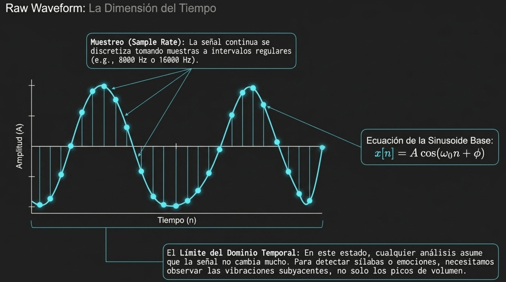
La Transformada Discreta de Fourier (DFT) convierte una secuencia finita de muestras discretas del tiempo en una secuencia de números complejos que representan la amplitud y fase de las distintas componentes de frecuencia armónica:<>
Para entender a fondo la ecuación de la DFT, analicemos el rol de cada variable:
(Tamaño de la ventana o bloque): Es el número total de muestras que estamos analizando simultáneamente.
(Índice temporal): La coordenada de cada muestra en el tiempo ().
(Índice o "bin" frecuencial): Representa la frecuencia de análisis (). Cada valor de evalúa la presencia de una frecuencia que completa exactamente ciclos a lo largo de las muestras.
: El valor de la muestra de audio en el tiempo .
: El resultado espectral para la frecuencia , que es un número complejo.
La DFT calcula productos con exponenciales complejas de frecuencias de análisis. La ortogonalidad de esa base permite obtener sus coeficientes.
Una sinusoide exactamente alineada con un bin puede concentrar su contribución en los bins correspondientes. Si no coincide con la rejilla o se usa una ventana finita, puede distribuir energía entre bins: es fuga espectral. Un coeficiente no mide exclusivamente una sinusoide física aislada del resto.
14.1.1. ¿Qué significa que el resultado sea un Número Complejo?
Cada coeficiente complejo se describe mediante magnitud y fase (la fase no está definida cuando la magnitud es cero). La magnitud no es directamente energía: se utiliza , con los factores de normalización pertinentes, para describir energía o potencia espectral.
Muchos pipelines de ASR usan magnitud o potencia y descartan la fase explícita. Otros modelos parten del audio crudo. Para reconstruir exactamente las muestras con la DFT inversa hace falta el espectro complejo completo o su representación equivalente.
14.1.2. De los Bins a las Frecuencias Reales en Hertz (Hz)
Para una frecuencia de muestreo y una DFT de longitud , la separación entre bins es:
No debe confundirse esa separación con la resolución efectiva para separar dos tonos cercanos: también depende de la duración y de la ventana. Añadir ceros aumenta el número de bins e interpola la rejilla, pero no crea nueva información de la señal.
Para una señal real, la DFT verifica simetría conjugada:
Por eso rfft devuelve coeficientes no redundantes. El bin 0 es DC. Si es par, el bin corresponde exactamente a (Nyquist); con impar no hay un bin exactamente en Nyquist. Los coeficientes complejos incluyen tanto magnitud como fase.
14.1.3. De los Bins a las Frecuencias Reales en Hertz (Hz)
Matemáticamente, la DFT no ve a como un fragmento aislado de duración finita, sino como un único ciclo de una señal que se repite periódicamente en el tiempo desde hasta .
Si el final de la ventana no coincide con el inicio , la repetición periódica introduce un salto abrupto o discontinuidad artificial en los extremos del bloque.
Este salto abrupto genera armónicos de alta frecuencia espurios que "ensucian" el espectro, fenómeno conocido como fuga espectral (spectral leakage)**.
Solución en ASR: Por esta razón exacta, antes de aplicar la DFT o FFT, multiplicamos el bloque de audio por una función de ventana suave (como Hamming o Hanning), que atenúa los extremos y reduce lóbulos laterales; Hann llega a cero en su versión simétrica, mientras Hamming conserva un pedestal cercano a 0.08. El ventaneo reduce la fuga, no la elimina.
14.1.4. Primeras Conclusiones para ASR y Procesamiento de Voz
En el reconocimiento automático del habla, no calculamos una sola DFT para todo un audio completo, porque la voz humana es una señal que cambia con el tiempo (no estacionaria).
En su lugar, dividimos el audio en marcos cortos de (donde la señal se asume cuasiestacionaria), aplicamos una ventana de Hamming para atenuar los bordes, y calculamos la DFT de cada marco sucesivo.
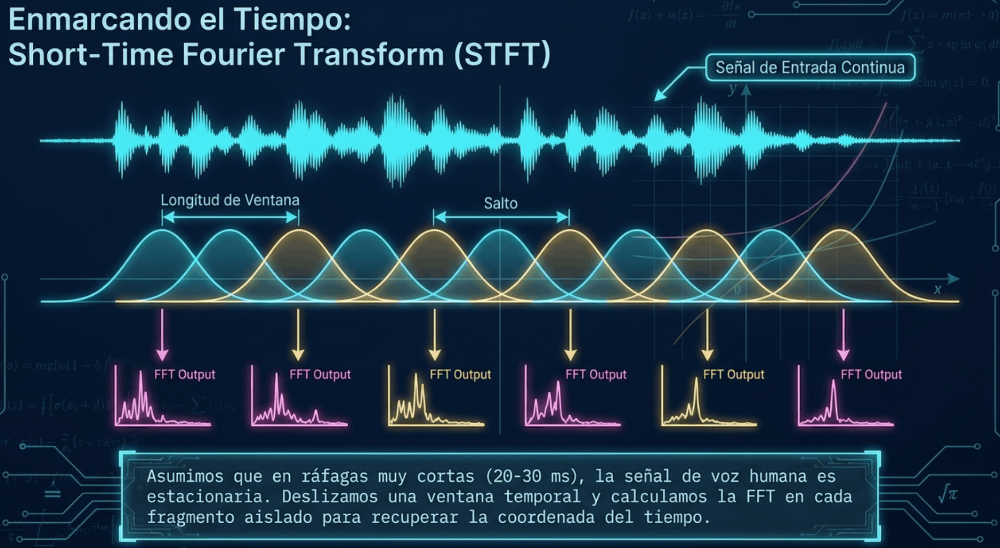
Al concatenar estas DFTs a lo largo del tiempo, construimos la Transformada de Fourier de Tiempo Corto (STFT) y el espectrograma, base indispensable para extraer bancos de filtros Mel (Mel filterbanks) y coeficientes MFCC.
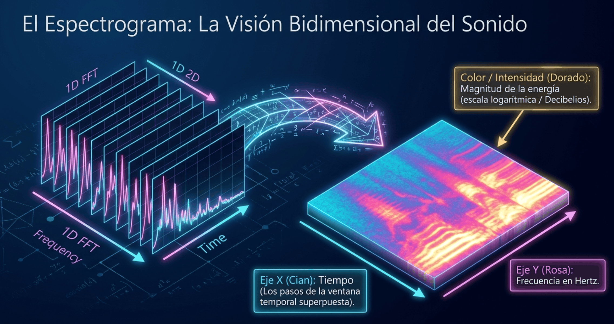
14.2. La Transformada Rápida de Fourier (FFT)
La Transformada Rápida de Fourier (FFT) no es una nueva transformada matemática, sino una familia de algoritmos computacionales de tipo divide y vencerás diseñados para calcular la Transformada de Fourier Discreta (DFT) reduciendo la complejidad algorítmica de un costo cuadrático a un costo casi lineal .
Para , esto reduce millón de operaciones a (una factor de reducción de ), haciendo posible el procesamiento de audio en tiempo real.
14.2.1. El Algoritmo FFT Cooley-Tukey (Radix-2)
Calcular la DFT de forma directa exige evaluar coeficientes , donde cada uno requiere una suma de multiplicaciones complejas. Esto impone un costo computacional de:
14.2.1.1. Ejemplo Numérico (Escenario 1): El Pipeline Real de ASR/TTS
Para este ejemplo elegimos audio a 16 kHz, ventanas de 400 muestras (25 ms) y saltos de 160 muestras (10 ms). La FFT se completa a 512 puntos para ilustrar Radix-2. Whisper usa una FFT de 400 puntos y Hann; Wav2Vec2 puede extraer características directamente de la forma de onda. Estos parámetros no son universales para todo ASR.
1. Número de Ventanas a Procesar por Segundo de Voz
Cada segundo que un usuario habla frente al micrófono, el procesador debe ejecutar 100 transformadas de Fourier de puntos.
2. Costo computacional por cada ventana individual ()
DFT Directa: cada una de las salidas requiere multiplicaciones-acumulaciones (MAC) complejas.
FFT (Radix-2 Cooley-Tukey): requiere mariposas. Cada mariposa hace 1 multiplicación compleja y 2 sumas complejas (10 FLOPs).
Nota: con señal real se puede usar una FFT real (rfft), que cuesta aproximadamente la mitad. Una trama de a son muestras, que se rellenan con ceros hasta (zero-padding) para obtener una potencia de dos.
3. Cómputo Total por cada 1 Segundo de Audio (100 Ventanas)
Con DFT Directa:
Con FFT:
4. Traducción a Operaciones de Coma Flotante Reales (FLOPs)
Una multiplicación compleja requiere 4 multiplicaciones reales y 2 sumas reales (6 FLOPs). Una suma compleja requiere 2 FLOPs. Por tanto, una MAC compleja (DFT) equivale a , y una mariposa (FFT) a .
DFT Directa: solo para calcular el espectro inicial de un solo micrófono.
FFT: (aprox. con rfft).
14.2.1.2. Ejemplo Numérico (Escenario 2): Procesar 1 Segundo Completo en un Solo Bloque ()
¿Por qué no aplicar una sola transformada a todo el bloque de 1 segundo de audio sin partirlo en "ventanitas"?
Para muestras (o su potencia de dos más cercana para FFT, ):
DFT Directa ():
En hardware: consumidos en transformar un solo segundo de señal.
FFT Radix-2 ():
En hardware: .
(Orden de magnitud: se comparan tamaños ligeramente distintos, frente a .)
Resultado contraintuitivo: la FFT monolítica () es más barata que las 100 FFT de puntos (). Por tanto, el motivo para fragmentar no es el coste computacional, sino:
Resolución temporal: una sola FFT indica qué frecuencias aparecen, pero no cuándo ocurre cada fonema.
No estacionariedad: la voz solo es aproximadamente estacionaria en tramas de .
Latencia: habría que esperar de audio antes de empezar a procesar.
14.2.1.3. Conclusiones de los Ejemplos
Latencia en Streaming (Tiempo Real): Un sistema conversacional debe responder con latencias del orden de . La DFT directa de ( por segundo de audio) es asumible en una CPU moderna, pero la DFT de un bloque de () ya consume una parte apreciable de ese presupuesto, que debe compartirse con las capas posteriores del modelo (Transformers, Conformer). En la práctica, la latencia depende sobre todo del tamaño de la ventana y del chunk de audio, y la FFT libera presupuesto para la red.
Consumo de Batería en Dispositivos Edge (Móviles / IoT): Ejecutar millones de MAC complejas por segundo de forma continua () es inviable en muchos microcontroladores y DSPs de bajo consumo, y desperdicia energía incluso en un móvil, que dispone de decenas de GFLOPs. Con la FFT, el costo baja a (unas veces menos), lo que permite su cálculo en dispositivos de muy bajo consumo y reduce el gasto energético.
Escalabilidad en Servidores ASR: Un servidor en la nube que atiende flujos simultáneos a tendría que procesar mil millones de MAC complejas por segundo () con la DFT tradicional; con la FFT, esa carga cae a ( millones de mariposas por segundo), una fracción despreciable de una sola máquina multinúcleo. En la práctica, el cuello de botella de un servidor ASR es la red neuronal, no la transformada. (La telefonía clásica muestrea a , lo que reduciría aún más estas cifras.)
14.2.1.4. Implementación con PyTorch (Simulación de Drift)
CELDA 1: Instalación, Librerías y Configuración de Hardware
Código Python · celda 54
# ==============================================================================# CELDA 1: Configuración de Dependencias, Hardware y Semillas# ==============================================================================importgcimportmathimporttimefromtypingimportTupleimportIPython.displayasipdimportmatplotlib.patchesaspatchesimportmatplotlib.pyplotaspltimportnumpyasnpimporttorchimporttorchaudioimporttorchaudio.functionalasFfromtorchaudio.utilsimport_download_asset# Configuración determinista y selección de aceleradortorch.manual_seed(42)np.random.seed(42)device=torch.device("cuda"iftorch.cuda.is_available()else"cpu")print(f"Estado del entorno:")print(f" PyTorch Version : {torch.__version__}")print(f" TorchAudio : {torchaudio.__version__}")print(f" Dispositivo : {device}")ifdevice.type=="cuda":print(f" GPU Activa : {torch.cuda.get_device_name(0)}")print(f" VRAM Disponible : {torch.cuda.get_device_properties(0).total_memory/(1024**3):.2f} GB")
Estado del entorno:
PyTorch Version : 2.11.0+cu128
TorchAudio : 2.11.0+cu128
Dispositivo : cuda
GPU Activa : Tesla T4
VRAM Disponible : 14.56 GB
CELDA 2: Descarga y Extracción de 5.0 Segundos de Voz Real
Código Python · celda 56
defload_and_preprocess_speech(target_duration_sec:float=60.0,target_sr:int=16000)->Tuple[torch.Tensor,int]:r"""Descarga una locución de voz real del dataset público VOiCES, la estandariza a canal mono, ajusta la tasa de muestreo a 16 kHz y sintetiza un flujo continuo extendido de exactamente 1 minuto de duración. Mecánica de ejecución: ---------------------- 1. Descarga el recurso de prueba 'Lab41-SRI-VOiCES' oficial de TorchAudio. 2. Reduce cualquier señal multicanal a un único canal mono. 3. Aplica un filtro de remuestreo polifásico (`F.resample`) si la tasa original difiere de `target_sr`. 4. Concatena la locución de forma continua y suave hasta completar exactamente los 60.0 segundos requeridos (N = 960,000 muestras). 5. Normaliza el rango dinámico de la onda al intervalo [-1.0, 1.0]. Parámetros: ----------- target_duration_sec : float, opcional Duración requerida en segundos del archivo procesado. Por defecto es 60.0 s. target_sr : int, opcional Tasa de muestreo en Hertz (16,000 Hz es el estándar acústico en ASR). Retorna: -------- Tuple[torch.Tensor, int] - waveform_long : Tensor 1D de forma (N,) donde N = target_duration_sec * target_sr. - target_sr : Frecuencia de muestreo confirmada. Lanza: ------ ValueError Si la duración requerida es menor o igual a cero. RuntimeError Si no se puede descargar el asset acústico remoto de TorchAudio. """iftarget_duration_sec<=0:raiseValueError(f"target_duration_sec debe ser estrictamente > 0. Recibido: {target_duration_sec}")try:asset_path=_download_asset("tutorial-assets/Lab41-SRI-VOiCES-src-sp0307-ch127535-sg0042.wav")exceptExceptionaserror:raiseRuntimeError(f"Fallo al descargar el archivo de audio VOiCES: {error}")fromerrorwaveform,sr=torchaudio.load(asset_path)# Conversión a mono si la señal cuenta con múltiples canalesifwaveform.shape[0]>1:waveform=waveform[0:1,:]# Resampleo a la tasa objetivo estándar de 16 kHzifsr!=target_sr:waveform=F.resample(waveform,orig_freq=sr,new_freq=target_sr)sr=target_srtarget_samples=int(target_duration_sec*sr)# Extensión continua hasta alcanzar los 60 segundos completoswhilewaveform.shape[1]<target_samples:waveform=torch.cat([waveform,waveform],dim=1)waveform_long=waveform[0,:target_samples].contiguous()# Normalización de pico para evitar distorsión acústicapeak_val=torch.max(torch.abs(waveform_long))ifpeak_val>0:waveform_long=waveform_long/peak_valreturnwaveform_long,sr# Carga del bloque de 60 segundosAUDIO_DURATION=60.0TARGET_SR=16000speech_real_60s,sr=load_and_preprocess_speech(AUDIO_DURATION,TARGET_SR)total_samples_60s=speech_real_60s.shape[0]print(f"Audio de 1 Minuto cargado exitosamente:")print(f" • Muestras totales (N) : {total_samples_60s:,} muestras continuas")print(f" • Duración temporal : {AUDIO_DURATION:.1f} segundos (1 minuto)")print(f" • Tasa de muestreo (Fs) : {sr} Hz")print(f" • Memoria del audio (RAM) : {(total_samples_60s*4)/(1024**2):.2f} MB (Vector float32)")
CELDA 3: Síntesis Acústica de las 3 Representaciones y Reproductores de Audio
Esta celda permite escuchar el original y dos construcciones didácticas. La reconstrucción por ventanas depende de cómo se solapan y normalizan los bloques; una pulsación audible puede ser un artefacto de esa reconstrucción. El modelo no recibe un audio «pulsado»: recibe las características o muestras que define su arquitectura.
Código Python · celda 59
# ==============================================================================# CELDA 3: Generación de las 3 Pistas de 1 Minuto y Reproductores de Audio# ==============================================================================defsynthesize_monolithic_dft_audio(x:torch.Tensor,sr:int=16000)->torch.Tensor:r"""Sintetiza la representación auditiva que percibe una DFT monolítica global sobre 1 minuto continuo (N = 960,000 muestras) al eliminar la dimensión temporal. Mecánica de ejecución: ---------------------- 1. Evalúa la FFT de todo el bloque continuo de 60 segundos mediante Cooley-Tukey. 2. Extrae la magnitud espectral pura |X[k]|, que representa el promedio global de formantes y frecuencias presentes a lo largo de todo el minuto. 3. Descarta la fase temporal original y la reemplaza por una fase aleatoria uniforme \theta \sim \mathcal{U}[-\pi, \pi]. 4. Aplica la transformada inversa (iFFT) de vuelta al dominio temporal. El resultado posee exactamente el mismo espectro de energía, pero sin modulación en el tiempo. Parámetros: ----------- x : torch.Tensor Señal temporal unidimensional con N = 960,000 muestras. sr : int, opcional Tasa de muestreo en Hertz. Por defecto 16000. Retorna: -------- torch.Tensor Señal acústica sintetizada del dron espectral estático de 1 minuto. Lanza: ------ ValueError Si la señal de entrada no es de dimensión 1. """ifx.ndim!=1:raiseValueError(f"Se esperaba un tensor 1D. Dimensiones recibidas: {x.shape}")N=x.shape[0]# Cálculo eficiente del espectro positivo con FFT de un solo bloque (O(N log N))X_full=torch.fft.rfft(x)magnitude=torch.abs(X_full)# Inyección de fase estocástica: rompe la coherencia temporal de las palabrasrandom_phase=torch.rand_like(magnitude)*2.0*math.pi-math.piX_reconstructed=magnitude*torch.exp(1j*random_phase)# Transformada inversa rápida al dominio del tiempoaudio_static=torch.fft.irfft(X_reconstructed,n=N)# Normalización a rango [-1.0, 1.0]audio_static=audio_static/torch.max(torch.abs(audio_static))returnaudio_staticdefcreate_windowed_inspection_audio(x:torch.Tensor,sr:int=16000,win_ms:float=25.0,hop_ms:float=10.0,)->torch.Tensor:r"""Reconstruye el audio continuo a partir de los cortes discretos de ventanas de 25 ms y saltos de 10 ms (STFT) mediante solapamiento y suma (Overlap-Add). Mecánica de ejecución: ---------------------- 1. Segmenta la señal en marcos de win_length = 400 muestras (25 ms a 16 kHz). 2. Pesa cada segmento con una ventana de Hamming para forzar a cero los extremos. 3. Aplica Overlap-Add (OLA) normalizado sobre los marcos procesados para comprobar que la fragmentación en ventanas preserva la inteligibilidad fonética. Parámetros: ----------- x : torch.Tensor Vector 1D de la señal de voz original. sr : int, opcional Tasa de muestreo en Hertz. Por defecto 16000. win_ms : float, opcional Duración de cada ventana de análisis en milisegundos. Por defecto 25 ms. hop_ms : float, opcional Desplazamiento temporal de avance entre ventanas en milisegundos. Por defecto 10 ms. Retorna: -------- torch.Tensor Señal reconstruida que refleja el proceso de corte y ventaneo aplicado en ASR. """ifx.ndim!=1:raiseValueError(f"Se esperaba un tensor 1D. Dimensiones recibidas: {x.shape}")win_length=int((win_ms/1000.0)*sr)hop_length=int((hop_ms/1000.0)*sr)window=torch.hamming_window(win_length)total_len=len(x)num_frames=(total_len-win_length)//hop_lengthreconstructed_signal=torch.zeros(total_len)normalization_weights=torch.zeros(total_len)foriinrange(num_frames):start_idx=i*hop_lengthend_idx=start_idx+win_length# Corte de la ventana y aplicación de la función de Hammingframe=x[start_idx:end_idx]*window# Acumulación para solapamiento y suma (OLA)reconstructed_signal[start_idx:end_idx]+=framenormalization_weights[start_idx:end_idx]+=window# Compensación de amplitud por superposición de ventanasvalid_mask=normalization_weights>1e-4reconstructed_signal[valid_mask]/=normalization_weights[valid_mask]reconstructed_signal=reconstructed_signal/torch.max(torch.abs(reconstructed_signal))returnreconstructed_signalprint("Procesando las 3 versiones de 1 minuto de audio...")t0=time.perf_counter()# Generación de señalesaudio_dft_monolithic_60s=synthesize_monolithic_dft_audio(speech_real_60s,TARGET_SR)audio_windowed_stft_60s=create_windowed_inspection_audio(speech_real_60s,TARGET_SR,win_ms=25.0,hop_ms=10.0)print(f"Procesamiento finalizado en {(time.perf_counter()-t0):.2f} segundos.\n")print("="*85)print("REPRODUCTORES DE 1 MINUTO: COMPARATIVA AUDITIVA PARA LOS ALUMNOS")print("="*85)print("\n[AUDIO 1] Voz Real Continua (1 Minuto Completo):")print(" └─ Qué escuchar: Fonemas cambiantes, palabras estructuradas y prosodia natural.")ipd.display(ipd.Audio(speech_real_60s.numpy(),rate=TARGET_SR))print("\n[AUDIO 2] Lo que percibe la DFT Monolítica (1 Solo Bloque de 60 segundos):")print(" └─ Qué escuchar: Zumbido estático constante (dron). Posee la misma energía frecuencial,")print(" pero perdió por completo la secuencia temporal de las palabras.")ipd.display(ipd.Audio(audio_dft_monolithic_60s.numpy(),rate=TARGET_SR))print("\n[AUDIO 3] Señal Reconstruida a partir de Ventanas de 25 ms y Saltos de 10 ms:")print(" └─ Qué escuchar: La voz reconstruida a partir de los marcos discretos que entran a la FFT.")ipd.display(ipd.Audio(audio_windowed_stft_60s.numpy(),rate=TARGET_SR))
Output hidden; open in https://colab.research.google.com to view.
# ==============================================================================# CELDA 4: Visualización Gráfica Editorial del Minuto Completo y sus Recortes# ==============================================================================defplot_long_audio_spectral_analysis(raw_audio:torch.Tensor,dft_audio:torch.Tensor,sr:int=16000,win_ms:float=25.0,hop_ms:float=10.0,n_fft:int=512,)->None:r"""Genera una visualización multi-panel que contrasta la onda de 60 segundos, el colapso espectral de la DFT global y la resolución tiempo-frecuencia de la STFT. Parámetros: ----------- raw_audio : torch.Tensor Tensor 1D con la locución original de 1 minuto. dft_audio : torch.Tensor Tensor 1D con la versión sintética estática de la DFT global. sr : int, opcional Frecuencia de muestreo en Hz. Por defecto 16000. win_ms : float, opcional Duración de la ventana en ms. Por defecto 25 ms. hop_ms : float, opcional Avance entre ventanas en ms. Por defecto 10 ms. n_fft : int, opcional Puntos de la FFT por ventana. Por defecto 512. """N=raw_audio.shape[0]total_sec=N/srtime_axis=np.linspace(0,total_sec,N)# 1. Espectro Monolítico de todo el minuto vía FFTX_global=torch.fft.rfft(raw_audio)freqs_global=np.linspace(0,sr/2,len(X_global))mag_global_db=20.0*np.log10(np.maximum(torch.abs(X_global).numpy(),1e-5))# 2. Espectrograma STFT completo de 60 segundoswin_length=int((win_ms/1000.0)*sr)hop_length=int((hop_ms/1000.0)*sr)window=torch.hamming_window(win_length)stft_matrix=torch.stft(input=raw_audio,n_fft=n_fft,hop_length=hop_length,win_length=win_length,window=window,center=True,pad_mode="reflect",return_complex=True,)spec_db=20.0*torch.log10(torch.clamp(torch.abs(stft_matrix),min=1e-5)).numpy()stft_times=np.arange(spec_db.shape[1])*(hop_length/sr)stft_freqs=np.linspace(0,sr/2,spec_db.shape[0])# Lienzo gráficoplt.style.use("dark_background")fig,axes=plt.subplots(4,1,figsize=(16,13),sharex=False)# Gráfico 1: Onda Real de 1 Minutoaxes[0].plot(time_axis,raw_audio.numpy(),color="#38BDF8",linewidth=0.3)axes[0].set_title(f"1. Señal de Voz Real Continua (1 Minuto Completo = {N:,} Muestras)",fontsize=11,fontweight="bold",color="#38BDF8",)axes[0].set_ylabel("Amplitud",fontsize=10)axes[0].set_xlim([0,total_sec])axes[0].grid(True,linestyle=":",alpha=0.3)# Resaltado de los primeros marcos de 25 msforiinrange(12):t_start=i*(hop_length/sr)rect=patches.Rectangle((t_start,-0.9),win_length/sr,1.8,linewidth=1.2,edgecolor="#FFE600",facecolor="none",alpha=0.6,)axes[0].add_patch(rect)# Gráfico 2: Onda Sintética de la DFT Monolíticaaxes[1].plot(time_axis,dft_audio.numpy(),color="#F72585",linewidth=0.3)axes[1].set_title("2. Señal Temporal de la DFT Monolítica (El zumbido estático sin estructura fonética)",fontsize=11,fontweight="bold",color="#F72585",)axes[1].set_ylabel("Amplitud",fontsize=10)axes[1].set_xlim([0,total_sec])axes[1].grid(True,linestyle=":",alpha=0.3)# Gráfico 3: Espectro Global Promediado de 1 Minutoaxes[2].plot(freqs_global,mag_global_db,color="#F72585",linewidth=0.4)axes[2].set_title("3. Espectro Global de 1 Minuto (DFT Monolítica): Promedio Ciego (Pérdida Total del Eje Temporal)",fontsize=11,fontweight="bold",color="#F72585",)axes[2].set_ylabel("Magnitud (dB)",fontsize=10)axes[2].set_xlabel("Frecuencia (Hz) [Banda crítica de formantes 0 - 4000 Hz]",fontsize=10)axes[2].set_xlim([0,4000])axes[2].grid(True,linestyle=":",alpha=0.3)# Gráfico 4: Espectrograma STFT de marcos de 25 msim=axes[3].imshow(spec_db,origin="lower",aspect="auto",cmap="magma",extent=[stft_times[0],stft_times[-1],stft_freqs[0],stft_freqs[-1]],)axes[3].set_title(f"4. Espectrograma STFT (Ventanas de 25 ms, Saltos de 10 ms = {spec_db.shape[1]:,} Columnas): Base para ASR/TTS",fontsize=11,fontweight="bold",color="#00F5D4",)axes[3].set_xlabel("Tiempo (segundos)",fontsize=10)axes[3].set_ylabel("Frecuencia (Hz)",fontsize=10)axes[3].set_ylim([0,4000])axes[3].set_xlim([0,total_sec])fig.colorbar(im,ax=axes[3],format="%+2.0f dB",pad=0.015)plt.tight_layout()plt.show()plot_long_audio_spectral_analysis(speech_real_60s,audio_dft_monolithic_60s,TARGET_SR)
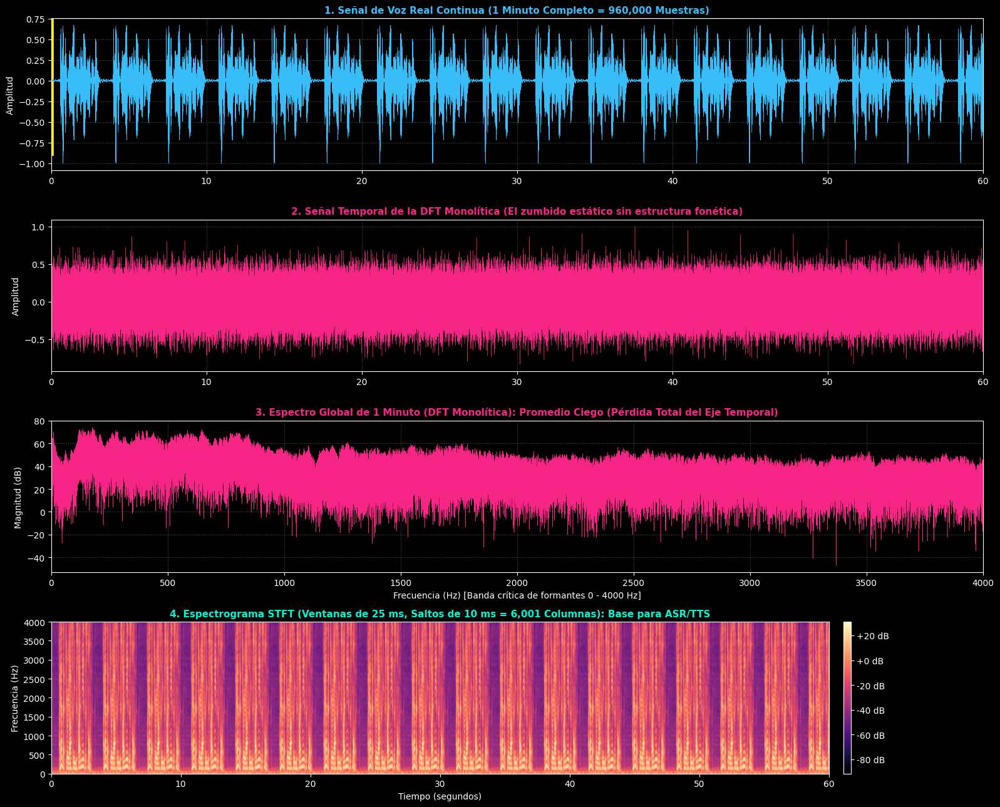
CELDA 5: Benchmark de Latencia y Factor de Aceleración ( vs )
Esta celda evalúa el crecimiento asintótico del tiempo de cómputo en bloques de tamaño creciente () antes de intentar el bloque masivo.
Código Python · celda 64
# ==============================================================================# CELDA 6: Análisis de Inviabilidad Física de la DFT sobre 1 Minuto de Habla# ==============================================================================defanalyze_one_minute_dft_impossibility(duration_sec:float=60.0,sr:int=16000)->None:r"""Calcula y expone analíticamente la demanda de memoria y costo computacional de intentar procesar 1 minuto continuo de audio con la DFT matricial directa O(N^2). Parámetros: ----------- duration_sec : float, opcional Duración del fragmento de audio en segundos. Por defecto 60.0 s. sr : int, opcional Frecuencia de muestreo en Hertz. Por defecto 16000. """N=int(duration_sec*sr)bytes_por_elemento=8# torch.complex64 = 8 bytestotal_celdas=N*Nmemoria_bytes=total_celdas*bytes_por_elementomemoria_tb=memoria_bytes/(1024**4)memoria_gb=memoria_bytes/(1024**3)# Operaciones de punto flotante aproximadas (8 FLOPs por multiplicación compleja)flops_dft=total_celdas*8flops_fft=int(N*math.log2(N)*8)print("="*85)print(f"ANÁLISIS FORENSE DE HARDWARE: 1 MINUTO DE AUDIO ({duration_sec:.0f} s CONTINUOS)")print("="*85)print(f" • Muestras temporales (N) : {N:,} muestras")print(f" • Dimensión de la matriz W : ({N:,} x {N:,}) celdas")print(f" • Total de elementos en W : {total_celdas:,} números complejos")print(f" • Memoria VRAM/RAM requerida para W : {memoria_tb:.2f} TERABYTES ({memoria_gb:,.1f} GB)")print(f" • Capacidad típica de GPU en Colab : 15.00 GB (NVIDIA Tesla T4)")print(f" • Sobredemanda sobre hardware real : {(memoria_gb/15.0):,.0f} veces la memoria física disponible")print("-"*85)print(f" • Cómputo requerido por DFT directa : {flops_dft/1e12:.2f} Tera-FLOPs")print(f" • Cómputo requerido por FFT : {flops_fft/1e6:.2f} Mega-FLOPs")print(f" • Factor de ahorro algorítmico : {(flops_dft/flops_fft):,.0f}x menos cómputo con FFT")print("="*85)analyze_one_minute_dft_impossibility(duration_sec=AUDIO_DURATION,sr=TARGET_SR)
=====================================================================================
ANÁLISIS FORENSE DE HARDWARE: 1 MINUTO DE AUDIO (60 s CONTINUOS)
=====================================================================================
• Muestras temporales (N) : 960,000 muestras
• Dimensión de la matriz W : (960,000 x 960,000) celdas
• Total de elementos en W : 921,600,000,000 números complejos
• Memoria VRAM/RAM requerida para W : 6.71 TERABYTES (6,866.5 GB)
• Capacidad típica de GPU en Colab : 15.00 GB (NVIDIA Tesla T4)
• Sobredemanda sobre hardware real : 458 veces la memoria física disponible
-------------------------------------------------------------------------------------
• Cómputo requerido por DFT directa : 7.37 Tera-FLOPs
• Cómputo requerido por FFT : 152.62 Mega-FLOPs
• Factor de ahorro algorítmico : 48,308x menos cómputo con FFT
=====================================================================================
A. Memoria de una DFT matricial explícita
Con , almacenar una matriz densa en complex64 requiere bytes: aproximadamente 7.37 TB decimales o 6.71 TiB. Este coste pertenece a esa implementación matricial; una DFT directa calculada con bucles no necesita almacenar la matriz completa. La FFT evita el coste temporal cuadrático.
El Abismo Computacional ( vs )
Costo DFT Directa ():
Una multiplicación de números complejos demanda 4 multiplicaciones reales y 2 sumas reales (6 FLOPs). Al acumular la sumatoria en cada celda, el costo operativo promedio asciende a por celda:
Costo FFT Cooley-Tukey ():
Al descomponer recursivamente la señal mediante simetría y periodicidad de las raíces de la unidad:
Aceleración algorítmica:
Un procesador que tarde 1 segundo en calcular la FFT tardaría más de 13 horas continuas de reloj en computar la DFT densa para ese mismo minuto de audio.
Los Dos Motivos Ineludibles: ¿Por qué STFT y no Procesamiento Monolítico?
¿Por qué no aplicar una sola FFT rápida a todo el minuto de golpe, si la FFT sí entra en memoria?»
PROBLEMA 1: FÍSICA Y ACÚSTICA PROBLEMA 2: ARQUITECTURA DE HARDWARE
┌──────────────────────────────────────────┐ ┌──────────────────────────────────────────┐
│ La voz es no estacionaria (cambia cada │ │ Intentar la DFT directa exige 6.71 TB de │
│ 10-25 ms por la motricidad del tracto). │ │ VRAM contigua (Memory Wall ineludible). │
└────────────────────┬─────────────────────┘ └────────────────────┬─────────────────────┘
│ │
└──────────────────────┬──────────────────────────────┘
▼
SOLUCIÓN: STFT EN VENTANAS CORTAS
(Marcos de 25 ms, saltos de 10 ms con FFT)
Razón Acústico-Fisiológica (No Estacionariedad): El aparato fonador humano no es una máquina estática. Las cuerdas vocales, la lengua y los labios modifican continuamente la cavidad resonadora cada .
Si se calcula una sola transformada a todo el minuto, se evalúa un promedio ciego global. Se obtiene qué frecuencias existieron a lo largo del minuto, pero se destruye la coordenada de cuándo ocurrió cada fonema.
Para alimentar redes neuronales (Conformer, Whisper, Wav2Vec2 o modelos de diarización), se necesita resolución temporal; la STFT proporciona una matriz bidimensional (tiempo frecuencia) donde cada columna preserva la trayectoria de los formantes acústicos.
Razón de Hardware y Streaming (Memory Wall y Latencia):
Al aplicar la STFT, el minuto de audio se corta en pequeñas ventanas de ( muestras a ).
Con zero-padding a la potencia de dos inmediata superior ( muestras), cada ventana individual requiere una FFT de solo:
Incluso procesando las ventanas que componen el minuto con solapamiento del 60%, el cómputo total de todas las ventanas combinadas es de apenas , lo cual se ejecuta en en la GPU de Colab.
Esto habilita el procesamiento en tiempo real (streaming): el reconocedor no espera a que el hablante termine su minuto de locución; procesa y transcribe fotograma a fotograma con una latencia inferior a .
Código Python · celda 71
# ==============================================================================# CELDA 5: Benchmark Progresivo y Demostración Controlada de Crash de Memoria# ==============================================================================importgcimportmathimporttimeimporttorchdevice=torch.device("cuda"iftorch.cuda.is_available()else"cpu")defrun_progressive_dft_fft_benchmark(test_sizes=[1024,2048,4096,8192,16384,32768,65536],eval_iters:int=10,)->None:r"""Ejecuta un benchmark progresivo comparando la latencia de la DFT matricial directa O(N^2) frente a la FFT Cooley-Tukey O(N log N), provocando y capturando el colapso físico de memoria (OOM) en vivo sin reiniciar Colab. Parámetros: ----------- test_sizes : list de int Lista progresiva de longitudes N de audio temporal a evaluar. eval_iters : int, opcional Número de iteraciones sobre las que promediar la latencia. Por defecto 10. """print("\n"+"="*92)print("BENCHMARK PROGRESIVO DE ESCALABILIDAD Y CRASH TEST DE HARDWARE (DFT VS FFT)")print("="*92)print(f"{'Tamaño N':<9} | {'Equiv. Audio':<13} | {'VRAM W (GB)':<12} | {'DFT O(N²) (ms)':<15} | {'FFT O(N log N) (ms)':<20} | {'Estado DFT':<12}")print("-"*92)forNintest_sizes:duracion_ms=(N/16000.0)*1000.0duracion_str=(f"{duracion_ms:.1f} ms"ifduracion_ms<1000elsef"{duracion_ms/1000.0:.2f} s")# Cálculo analítico de memoria para W_N (torch.complex64 = 8 bytes por celda)vram_matriz_gb=(N*N*8)/(1024**3)sample=torch.randn(N,device=device)# ----------------------------------------------------------------------# 1. Medición de la FFT (Cooley-Tukey) - Siempre exitosa# ----------------------------------------------------------------------# Warmup de cuFFTfor_inrange(3):_=torch.fft.fft(sample)ifdevice.type=="cuda":torch.cuda.synchronize()start_event=torch.cuda.Event(enable_timing=True)end_event=torch.cuda.Event(enable_timing=True)start_event.record()for_inrange(eval_iters):_=torch.fft.fft(sample)end_event.record()torch.cuda.synchronize()t_fft_ms=start_event.elapsed_time(end_event)/eval_iterselse:t0=time.perf_counter()for_inrange(eval_iters):_=torch.fft.fft(sample)t_fft_ms=((time.perf_counter()-t0)/eval_iters)*1000.0# ----------------------------------------------------------------------# 2. Intento de Instanciación y Cómputo de la DFT Directa O(N^2)# ----------------------------------------------------------------------dft_ejecutada=Falset_dft_ms_str="N/A"estado_dft="OK"try:# Generación de la base ortogonal de proyección Wn=torch.arange(N,device=device,dtype=torch.float32).unsqueeze(1)k=torch.arange(N,device=device,dtype=torch.float32).unsqueeze(0)omega=torch.exp((-2j*math.pi/N)*(n@k))sample_c=sample.to(torch.complex64)# Warmup DFTfor_inrange(2):_=omega@sample_cifdevice.type=="cuda":torch.cuda.synchronize()start_event=torch.cuda.Event(enable_timing=True)end_event=torch.cuda.Event(enable_timing=True)start_event.record()for_inrange(eval_iters):_=omega@sample_cend_event.record()torch.cuda.synchronize()t_dft_ms=start_event.elapsed_time(end_event)/eval_iterselse:t0=time.perf_counter()for_inrange(eval_iters):_=omega@sample_ct_dft_ms=((time.perf_counter()-t0)/eval_iters)*1000.0t_dft_ms_str=f"{t_dft_ms:10.2f} ms"dft_ejecutada=True# Liberación inmediata de W para evitar fragmentacióndelomega,sample_c,n,kifdevice.type=="cuda":torch.cuda.empty_cache()except(torch.cuda.OutOfMemoryError,RuntimeError,MemoryError)asoom:estado_dft="CRASH OOM"t_dft_ms_str="COLAPSO"print(f"{N:<9} | {duracion_str:<13} | {vram_matriz_gb:<12.2f} | {t_dft_ms_str:<15} | {t_fft_ms:10.4f} ms | {estado_dft:<12}")print("\n"+"!"*92)print(f">>> ERROR DE MEMORIA CAPTURADO EN VIVO PARA N = {N:,} MUESTRAS ({duracion_str}) <<<")print(f"Tipo de excepción : {type(oom).__name__}")print(f"Memoria solicitada: {vram_matriz_gb:.2f} GB solo para la matriz cuadrada W.")ifdevice.type=="cuda":print(f"Capacidad total : {torch.cuda.get_device_properties(0).total_memory/(1024**3):.2f} GB VRAM.")print("Conclusión: La GPU no puede alojar el operador continuo de Fourier.")print(f"Sin embargo, la FFT resolvió esas {N:,} muestras en apenas {t_fft_ms:.4f} ms.")print("!"*92+"\n")# Limpieza forzada de memoria para permitir continuar la ejecucióngc.collect()ifdevice.type=="cuda":torch.cuda.empty_cache()breakifdft_ejecutada:print(f"{N:<9} | {duracion_str:<13} | {vram_matriz_gb:<12.2f} | {t_dft_ms_str:<15} | {t_fft_ms:10.4f} ms | {estado_dft:<12}")delsamplegc.collect()ifdevice.type=="cuda":torch.cuda.empty_cache()run_progressive_dft_fft_benchmark()
============================================================================================
BENCHMARK PROGRESIVO DE ESCALABILIDAD Y CRASH TEST DE HARDWARE (DFT VS FFT)
============================================================================================
Tamaño N | Equiv. Audio | VRAM W (GB) | DFT O(N²) (ms) | FFT O(N log N) (ms) | Estado DFT
--------------------------------------------------------------------------------------------
1024 | 64.0 ms | 0.01 | 0.04 ms | 0.0297 ms | OK
2048 | 128.0 ms | 0.03 | 0.14 ms | 0.0285 ms | OK
4096 | 256.0 ms | 0.12 | 0.51 ms | 0.0451 ms | OK
8192 | 512.0 ms | 0.50 | 1.99 ms | 0.0300 ms | OK
16384 | 1.02 s | 2.00 | 8.01 ms | 0.0479 ms | OK
32768 | 2.05 s | 8.00 | COLAPSO | 0.0441 ms | CRASH OOM
!!!!!!!!!!!!!!!!!!!!!!!!!!!!!!!!!!!!!!!!!!!!!!!!!!!!!!!!!!!!!!!!!!!!!!!!!!!!!!!!!!!!!!!!!!!!
>>> ERROR DE MEMORIA CAPTURADO EN VIVO PARA N = 32,768 MUESTRAS (2.05 s) <<<
Tipo de excepción : OutOfMemoryError
Memoria solicitada: 8.00 GB solo para la matriz cuadrada W.
Capacidad total : 14.56 GB VRAM.
Conclusión: La GPU no puede alojar el operador continuo de Fourier.
Sin embargo, la FFT resolvió esas 32,768 muestras en apenas 0.0441 ms.
!!!!!!!!!!!!!!!!!!!!!!!!!!!!!!!!!!!!!!!!!!!!!!!!!!!!!!!!!!!!!!!!!!!!!!!!!!!!!!!!!!!!!!!!!!!!
14.2.2. El Algoritmo FFT Cooley-Tukey (Radix-2) - Pasos
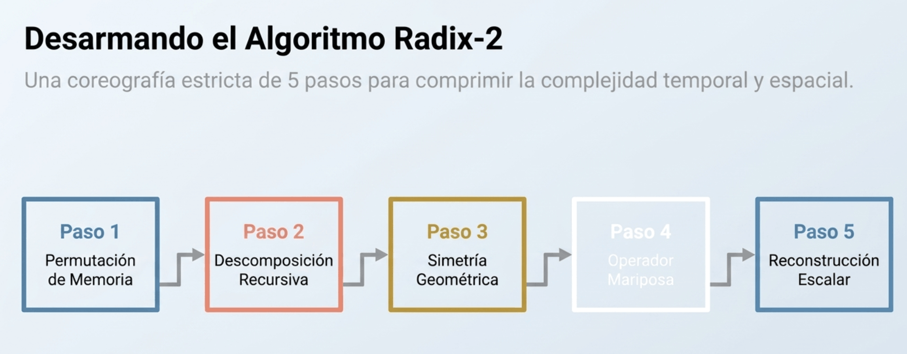
14.2.2.1. Paso 1: Reordenamiento por Inversión de Bits (Bit-Reversal Permutation)
Una implementación iterativa Radix-2 DIT puede reordenar previamente la entrada por inversión de bits y producir salida en orden natural. Una versión recursiva separa pares e impares mediante las llamadas y no requiere el mismo paso explícito. La ubicación del reordenamiento depende de la variante.
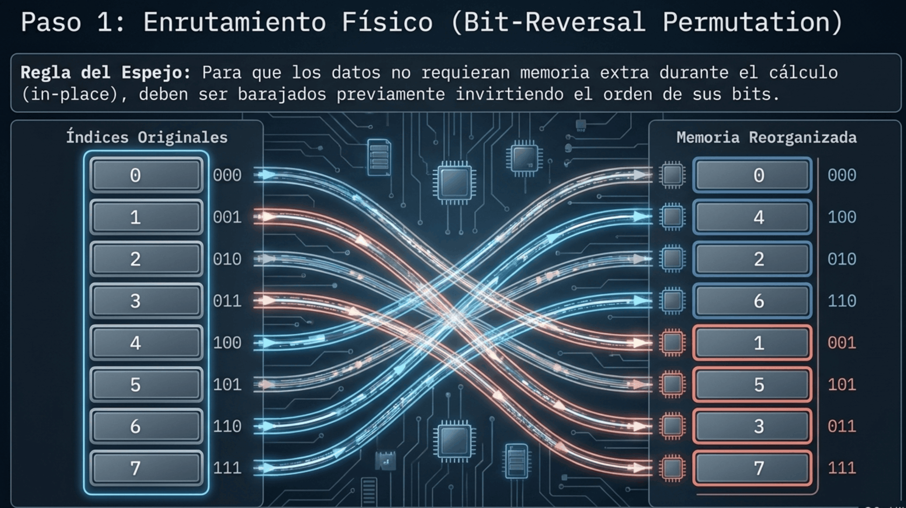
14.2.2.2. Paso 2: Descomposición Recursiva en Muestras Pares e Impares
Asumiendo que es un número par, particionamos las muestras originales en dos secuencias entrelazadas de longitud :
Muestras con índice par: para
Muestras con índice impar: para
Dividimos la sumatoria de la DFT separando ambos grupos:
Factorizamos el término fuera de la segunda sumatoria:
Dado que , observamos que cada sumatoria es formalmente una DFT independiente de tamaño :
donde es la DFT de las muestras pares y es la DFT de las muestras impares.
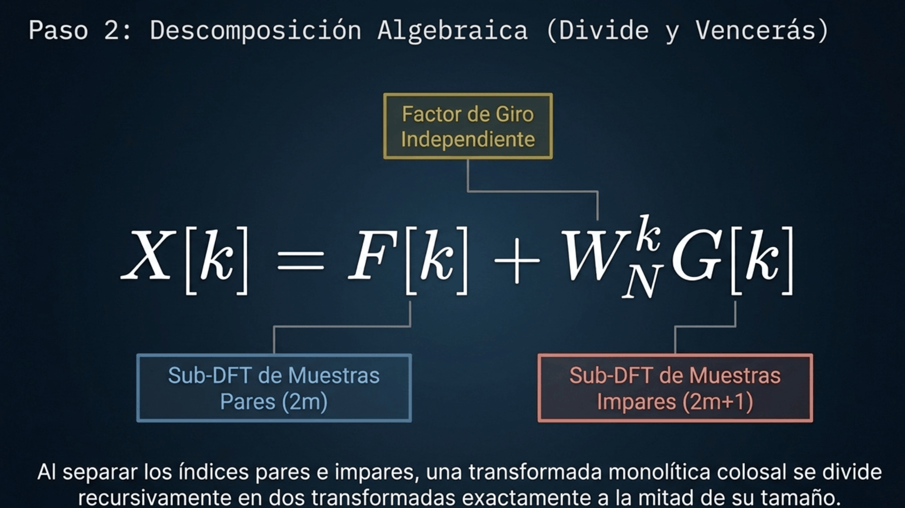
14.2.2.3. Paso 3: Explotación de la Simetría y Periodicidad de
Tanto como son periódicas de periodo . Para calcular la segunda mitad del espectro (), se utiliza la propiedad de simetría de fase del factor de giro:
Sustituyendo esta inversión de signo se obtiene la ecuación para la segunda mitad:
Esta simetría permite calcular dos salidas del espectro ( y ) realizando una sola multiplicación compleja
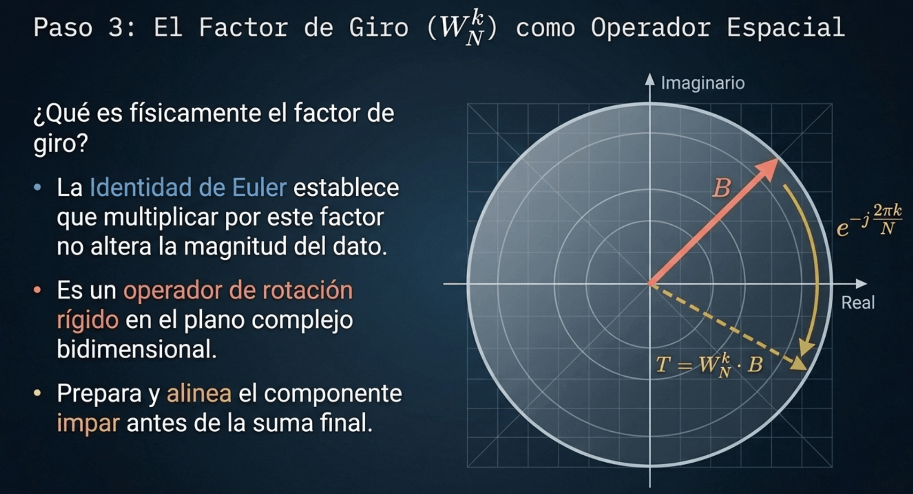
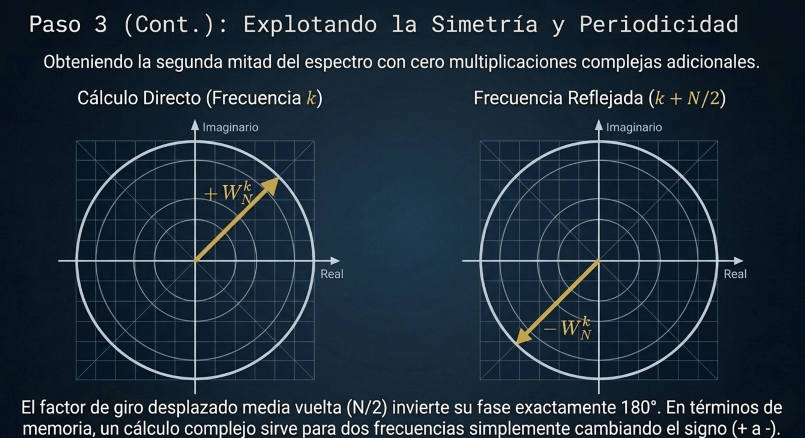
14.2.2.4. Paso 4: Operación en Mariposa (Butterfly Computation)
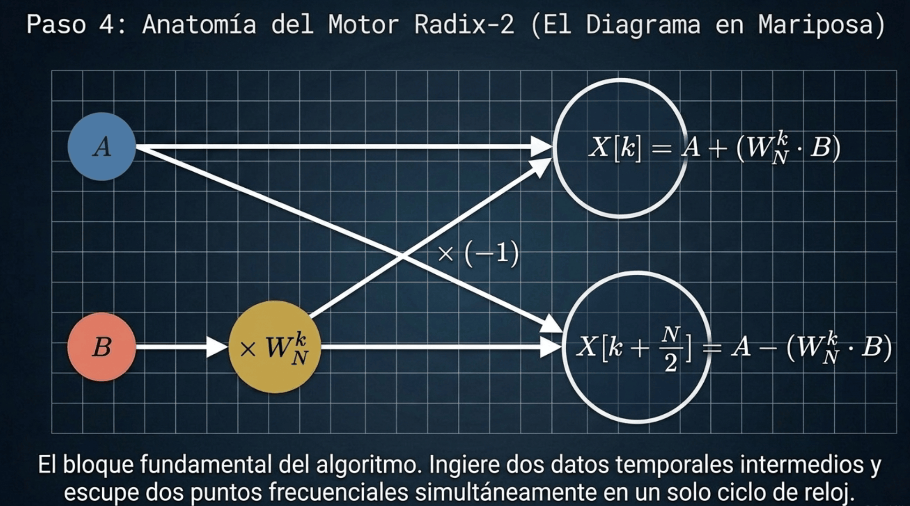
El núcleo del cálculo es la unidad en mariposa, que procesa en paralelo los pares de puntos y :
El diagrama en mariposa es la representación del flujo de datos de la operación elemental que combina dos números complejos intermedios (uno de la mitad par y otro de la mitad impar). Recibe este nombre debido a que las líneas que cruzan las entradas hacia las salidas forman visualmente las alas simétricas de una mariposa.
Si denominamos al coeficiente proveniente de la sub-DFT de muestras pares y al proveniente de la sub-DFT de muestras impares:
donde:
Multiplicación por el factor de giro: Se multiplica el valor de la rama inferior por el número complejo . Sea .
Suma superior: La salida de la rama superior toma el valor .
Resta inferior: La salida de la rama inferior toma el valor .
14.2.2.5. Paso 5: Reconstrucción Multinivel en Etapas
El algoritmo combina los datos de manera ascendente a través de etapas:
Etapa 1: Resuelve mariposas de puntos.
Etapa 2: Combina los pares para formar bloques de puntos.*
Etapa (): Integra la última etapa de mariposas para obtener el espectro final completo 13.
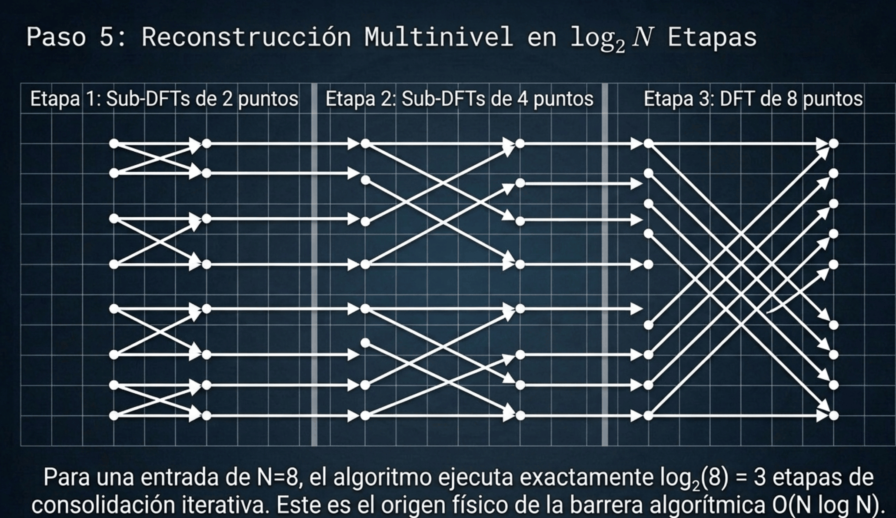
14.3. De la FFT a la Transformada de Fourier de Tiempo Reducido (Short-time Fourier Transform - STFT)
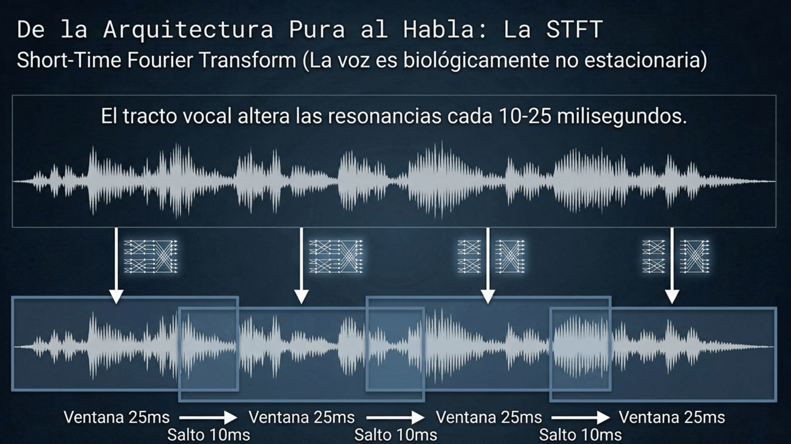
La voz humana es una señal no estacionaria: sus propiedades espectrales (frecuencia fundamental , formantes y contenido armónico) varían dinámicamente según los movimientos del aparato fonador (lengua, labios, cuerdas vocales).
Si aplicamos una única FFT sobre una palabra entera de 2 segundos, obtenemos un espectro global que indica qué frecuencias existen en la grabación, pero pierde por completo la información de cuándo ocurrieron.
La Transformada de Fourier de Tiempo Reducido (STFT)aplica la FFT de manera deslizante a lo largo de la señal mediante una función de ventana :
Donde:
: Índice del fotograma temporal (frame).
: Índice del bin de frecuencia ().
: Tamaño de la FFT (ej. muestras a ).
: Salto temporal (Hop Length, ej. muestras ).
: Ventana de suavizado (ej. Hamming o Hanning) para suprimir la fuga espectral (spectral leakage) generada por el truncamiento abrupto del marco.
La salida es una matriz bidimensional compleja que representa la evolución del espectro a lo largo del tiempo.
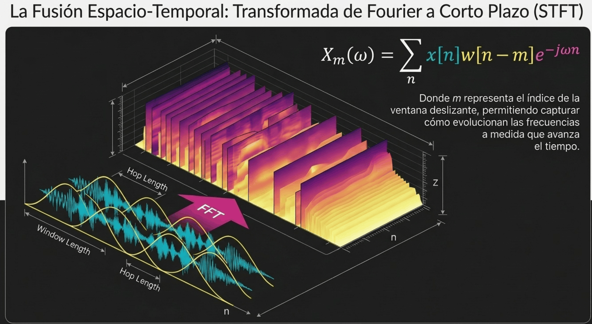
14.3.2. El Fenómeno de Fuga Espectral
Truncar una señal cortándola abruptamente equivale a multiplicarla por una ventana rectangular. En el dominio de la frecuencia, esto corresponde a convolucionar el espectro original con una función sinc (el núcleo de Dirichlet en el caso discreto), lo que introduce lóbulos secundarios que contaminan las frecuencias vecinas.
Dominio temporal ↔ frecuencial: la multiplicación en el tiempo equivale a una convolución en frecuencia (teorema de convolución). Cada componente de la señal original se "ensancha" con la forma del espectro de la ventana.
Forma del espectro de la ventana rectangular: para una señal continua, la transformada de una ventana rectangular de duración es una . Para señales discretas de muestras es el núcleo de Dirichlet, que se parece a una sinc pero es periódico.
Lóbulos secundarios: el primer lóbulo secundario de la ventana rectangular está a del pico, y su caída asintótica es de solo . Esa energía se filtra hacia frecuencias donde la señal original no tiene contenido: es la fuga espectral (spectral leakage).
Matiz importante: la fuga no es un defecto exclusivo de truncar "abruptamente". Siempre que se observa un segmento finito de una señal se aplica, al menos, una ventana rectangular implícita. Las ventanas suaves (Hann, Hamming) no la evitan, solo reducen los lóbulos secundarios a costa de ensanchar el lóbulo principal (peor resolución en frecuencia)
14.3.3. Funciones de Ventana
En el procesamiento de voz para ASR (Automatic Speech Recognition), STT (Speech-to-Text) y TTS (Text-to-Speech), las funciones de ventana se aplican para multiplicar la señal en tramos discretos finitos (tramas) y atenuar los bordes de cada tramo, mitigando el fenómeno de fuga espectral (spectral leakage) que provocaría el corte abrupto de una ventana rectangular.
Origen de la fuga espectral: la STFT asume implícitamente que cada trama es un periodo de una señal periódica. Si los extremos de la trama no coinciden, aparece una discontinuidad que dispersa energía hacia frecuencias donde no hay contenido real. Multiplicar por una ventana suave atenúa esas discontinuidades.
Matiz sobre los bordes: no todas las ventanas llegan a cero. La Hann decae a cero (en su forma simétrica, ), mientras que la Hamming conserva un pedestal residual de y solo atenúa los bordes, sin anularlos. Por eso se dice "atenuar", no "llevar a cero" en general.
La ventana no elimina la fuga, la reduce: es un compromiso entre la anchura del lóbulo principal (resolución en frecuencia) y el nivel de los lóbulos secundarios (fuga). La ventana rectangular tiene el lóbulo principal más estrecho, pero los lóbulos secundarios más altos ().
Atenuar los bordes tiene un coste: las muestras cercanas a los límites de cada trama pierden peso. Se compensa con el solape entre tramas (p. ej., ventanas de con salto de en ASR), de modo que esas muestras se recuperan en las tramas vecinas.
Papel en cada tarea: en ASR/STT la ventana se aplica en el análisis para obtener el espectrograma, del que se extraen log-mel o MFCC. En TTS aparece en la STFT/iSTFT (por ejemplo, en la pérdida STFT multiresolución o al reconstruir con Overlap-Add), no en la generación directa de la forma de onda de los vocoders neuronales.
14.3.3.1. Ventana Rectangular
Supongamos que tenemos una grabación de voz continua y necesitamos analizar solo 25 milisegundos. La ventana rectangular actúa como un interruptor de luz:
Antes del corte: El interruptor está en 0 (se apaga todo lo que no nos interes).
Durante el corte: El interruptor se pone en 1 instantáneamente (el audio pasa exactamente como es, sin cambios).
Al terminar el corte: El interruptor cae de golpe a 0 otra vez.
VENTANA RECTANGULAR
┌───────────────────────────┐ ◄── Vale 1 (el audio pasa intacto)
│ │
────────────┘ └──────────── ◄── Vale 0 (se ignora el resto)
Inicio Fin
La Transformada de Fourier (y la FFT) tiene una regla interna: asume que el fragmento que le diste se va a repetir en bucle infinito, como un loop de audio, de principio a fin.
Aquí es donde aparece el desastre:
Fragmento recortado Lo que Fourier cree que está analizando
(con tijera) (el fragmento en bucle infinito)
┌──────────┐ ┌──────────┐┌──────────┐┌──────────┐
│ /\ │ ... ──┤ /\ ├┤ /\ ├┤ /\ ├── ...
│ / \ │ │ / \ ││ / \ ││ / \ │
└──────\───┘ └──────\───┘└──────\───┘└──────\───┘
▲ ▲ ▲
│ └────┴── ¡Salto brusco / escalón!
Termina abajo (Nunca existió en la voz real)
Casi nunca una palabra o una onda termina exactamente en el mismo valor donde empezó.
Al poner el fragmento en bucle, el final se pega con el principio formando un escalón vertical artificial.
En la física del sonido, un escalón brusco e instantáneo no es natural; suena como un "chasquido" o un golpe seco.
Para poder dibujar ese chasquido con matemáticas, Fourier tiene que "inventar" un montón de frecuencias agudas y ruido que la voz original jamás tuvo.
A esta contaminación de frecuencias inventadas por culpa del borde brusco se le llama fuga espectral (spectral leakage).
14.3.3.2. Ventana de Hamming ()
Es una opción clásica en ASR y STT (estándar histórico en la extracción de coeficientes MFCC y bancos de filtros Mel, p. ej. en HTK), aunque no es universal: Whisper usa Hann, y Kaldi usa por defecto la ventana de Povey (una variante de Hann), con Hamming como opción.
Para análisis espectral con STFT se usa la forma periódica, que sustituye por en el denominador:
Comportamiento espectral: Sus coeficientes ( y ) se eligen para cancelar el primer lóbulo secundario (side lobe) de la ventana rectangular, logrando una atenuación del lóbulo secundario más cercano de aproximadamente (frente a de Hann). A cambio, su caída asintótica a altas frecuencias es lenta (, frente a de Hann).
Particularidad en bordes: En los extremos, la ventana no decae a cero, sino que mantiene un pedestal residual de (en la forma simétrica, en y ; en la periódica, en ). Este pedestal es una discontinuidad en los bordes, y es la causa de la caída asintótica lenta: la fuga espectral lejos del lóbulo principal es mayor que con Hann. Los bordes quedan atenuados, y las muestras cercanas a los límites del marco se recuperan en las tramas vecinas gracias al solape.
14.3.3.2. Ventana de Hann o Hanning ()
Ampliamente utilizada en ASR, TTS (síntesis de voz) y, en general, en análisis espectral (es la ventana por defecto en la mayoría de librerías de STFT).
Para análisis espectral y reconstrucción por STFT/iSTFT se usa la forma periódica, que sustituye por en el denominador:
Comportamiento espectral: Su primer lóbulo secundario está en (peor que el de Hamming cerca del lóbulo principal), pero su tasa asintótica de caída a altas frecuencias es mucho más rápida ( frente a de Hamming), porque no presenta discontinuidad en los bordes.
Particularidad en bordes: Decae a cero en los extremos (en la forma simétrica, ; en la periódica, y el cero queda en ). Esta ausencia de discontinuidad es la que explica su rápida caída asintótica, a diferencia del pedestal de Hamming ().
14.3.3.3. ¿Por qué Hann domina en TTS y Hamming en ASR?
En TTS, tras generar un espectrograma intermedio, hay que recuperar la forma de onda: los vocoders neuronales (HiFi-GAN, WaveNet…) la generan directamente, mientras que la iSTFT (con fase conocida o estimada, p. ej. Griffin-Lim) devuelve las muestras al dominio temporal mediante el algoritmo Overlap-Add (OLA). Cuando se aplica la misma ventana en análisis y síntesis, la reconstrucción perfecta exige la condición WOLA:
La ventana de Hann periódica cumple WOLA con un solapamiento del (). Con () cumple la COLA simple (válida si solo se enventana una vez), y para análisis y síntesis conjuntos se usa la raíz cuadrada de Hann. Si se cumple la condición y el espectrograma no ha sido alterado, no aparece modulación de amplitud espuria (efecto trémolo o zumbido); si el espectrograma es generado o modificado, pueden persistir artefactos por inconsistencia entre tramas.
En ASR, el pipeline habitual no reconstruye la señal; el espectrograma se convierte en log-mel filterbanks o MFCC (a menudo con coeficientes delta) para alimentar capas neuronales. El pedestal de la ventana de Hamming (≈ ) reduce el lóbulo lateral más cercano (≈ frente a ≈ de Hann) y, con ello, la fuga espectral. Los bordes de los bloques de quedan atenuados, pero esas muestras se recuperan en las tramas vecinas gracias al solape (salto de ).
14.4. El Espectrograma: Magnitud, Fase y Decibelios
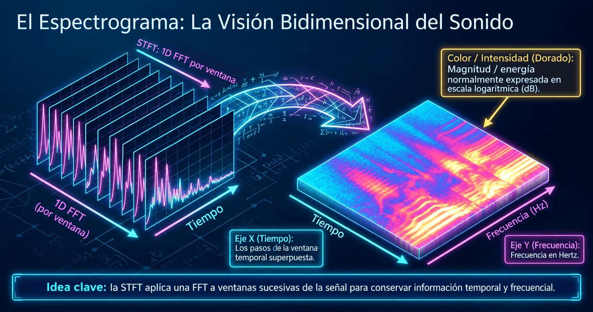
A la izquierda tenemos la primera etapa del análisis: el audio no se procesa de golpe; se divide en ventanas cortas y solapadas (típicamente de 25 milisegundos, con un salto de 10 ms) y a cada una se le calcula su FFT. Eso nos da una serie de láminas donde cada pico indica una frecuencia con energía en ese fragmento de señal.
Si colocamos esas láminas en fila siguiendo el eje del tiempo, obtenemos una superficie 3D (tiempo × frecuencia × magnitud). Pero los datos son una matriz 2D y la "altura" es simplemente el valor de cada celda, que es lo que las redes neuronales como Conformer, Whisper o los clasificadores de locutores reciben como entrada.
Ahí es donde entra la flecha central: miramos esa superficie desde arriba.
El tiempo queda en el eje horizontal, la frecuencia en el eje vertical, y la altura de las curvas se codifica como color: con esta paleta, donde había un pico de energía vocal la celda se ilumina en dorado, y donde había silencio queda oscura. No se pierde información en este paso (salvo la cuantización del mapa de color); lo que ya se descartó antes fue la fase.
El espectrograma es una "imagen" del sonido, pero no una fotografía fiel: al descartar la fase no se puede invertir de forma exacta. Su formato 2D permite usar herramientas heredadas de la visión por computadora (como las CNN), aunque el tiempo y la frecuencia no son ejes equivalentes y muchos modelos de voz tratan los cuadros como una secuencia temporal.
14.4.1. Anatomía de las Tres Dimensiones del Espectrograma
Un espectrograma organiza la señal en un plano tiempo–frecuencia y asigna a cada celda un valor, que se codifica en color:
Eje Horizontal (Tiempo, ):
Mide el avance temporal de la locución en segundos. Cada columna de la matriz corresponde a un marco ventaneado; con center=True (padding de por lado), su centro temporal es:
(sin centrado, esa expresión da el inicio del marco y el centro es ).
Eje Vertical (Frecuencia, ):Mide la frecuencia física en Hertz (no la altura tonal percibida, que es una magnitud perceptual). Para cualquier señal real, el espectro complejo es hermítico (), por lo que la mitad negativa es redundante y solo se representan los bins no negativos hasta la frecuencia de Nyquist ():
Valor de cada celda (Intensidad / Color):
El valor numérico de cada celda (magnitud , potencia o dB, según el pipeline) modula el brillo o el mapa de color (por ejemplo Magma o Inferno). En esas paletas, las áreas oscuras o frías representan silencio o piso de ruido y las zonas luminosas o cálidas concentran picos de alta energía; en la escala de grises analógica clásica la convención suele ser la inversa (oscuro = más intenso).
14.4.2. Compromiso de Resolución: Banda Ancha vs. Banda Estrecha
El espectrograma está sujeto al Principio de Incertidumbre de Gabor-Heisenberg: es físicamente imposible obtener simultáneamente una resolución temporal perfecta y una resolución frecuencial perfecta:
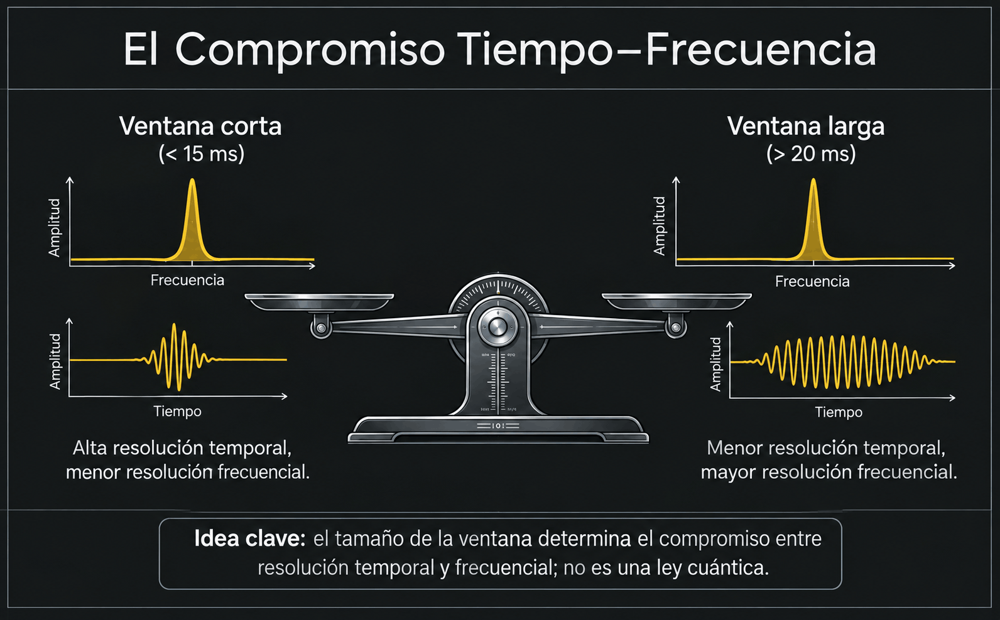
Dependiendo del tamaño de ventana seleccionado (), el espectrograma adquiere una de dos configuraciones acústicas clásicas:
ESPECTROGRAMA DE BANDA ANCHA (Wide-Band) ESPECTROGRAMA DE BANDA ESTRECHA (Narrow-Band)
(Ventana corta: ~5 a 10 ms) (Ventana larga: ~30 a 50 ms)
▲ Frecuencia ▲ Frecuencia
│ ┌──────────────────────────────────────┐ │ ┌──────────────────────────────────────┐
│ │ ══════════════════════════════════ │ F2 │ │ ────────────────────────────────── │ Armónico 4
│ │ │ │ │ ────────────────────────────────── │ Armónico 3
│ │ ══════════════════════════════════ │ F1 │ │ ────────────────────────────────── │ Armónico 2 (F0 x 2)
│ │ |||||||||||||||||||||||||||||||||| │ Estrías │ │ ────────────────────────────────── │ Frec. Fundamental (F0)
└──┴──────────────────────────────────────► Tiempo └──┴──────────────────────────────────────► Tiempo
(Resuelve tiempo: pulsos glotales y formantes) (Resuelve frecuencia: armónicos individuales)
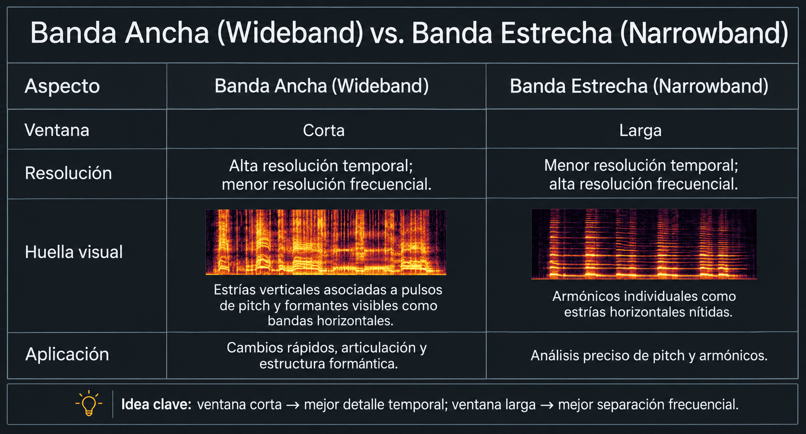
14.4.3. Espectrograma de Magnitud (Magnitude Spectrogram)
Descarta la fase y calcula el módulo (magnitud) del número complejo:
Mide la amplitud de la componente sinusoidal de frecuencia presente en el fragmento de señal enmarcado por la ventana (centrada en ), no en un instante puntual.
Es lineal respecto a la amplitud de la señal (si la señal se duplica, se duplica). Solo equivale a presión acústica ( en Pascales) si la cadena micrófono, preamplificador y conversor está calibrada; en general se expresa en unidades arbitrarias que además dependen de la ventana y de la normalización de la FFT.
14.4.3.1. Implementación con PyTorch
Celda 1: Instalación, Librerías y Configuración del Dispositivo
Código Python · celda 132
# ==============================================================================# CELDA 1: Configuración del Entorno, Importaciones y Dispositivo# ==============================================================================fromtypingimportTupleimportmatplotlib.pyplotaspltimporttorchimporttorchaudioimporttorchaudio.functionalasFimporttorchaudio.transformsasTfromtorchaudio.utilsimport_download_asset# Configuración de reproducibilidad y aceleradortorch.manual_seed(42)device=torch.device("cuda"iftorch.cuda.is_available()else"cpu")print(f"PyTorch versión : {torch.__version__}")print(f"TorchAudio : {torchaudio.__version__}")print(f"Dispositivo : {device}")ifdevice.type=="cuda":print(f"GPU Activa : {torch.cuda.get_device_name(0)}")
PyTorch versión : 2.11.0+cpu
TorchAudio : 2.11.0+cpu
Dispositivo : cpu
Celda 2: Carga y Preparación del Audio Real de Voz
Código Python · celda 134
# ==============================================================================# CELDA 2: Ingesta de Audio Real (VOiCES Dataset, 16 kHz)# ==============================================================================defload_sample_speech(duration_sec:float=2.0,target_sr:int=16000)->Tuple[torch.Tensor,int]:r"""Descarga una locución real, la convierte a mono, remuestrea a la frecuencia objetivo y recorta una duración exacta de audio normalizado. Parámetros: ----------- duration_sec : float, opcional Duración en segundos del fragmento a extraer. Por defecto 2.0. target_sr : int, opcional Frecuencia de muestreo estándar en Hz. Por defecto 16000. Retorna: -------- Tuple[torch.Tensor, int] - waveform : Tensor 1D con las muestras temporales normalizadas [-1.0, 1.0]. - target_sr : Tasa de muestreo final en Hz. """asset_path=_download_asset("tutorial-assets/Lab41-SRI-VOiCES-src-sp0307-ch127535-sg0042.wav")waveform,sr=torchaudio.load(asset_path)# Reducción a monoifwaveform.shape[0]>1:waveform=waveform[0:1,:]# Remuestreo si la señal difiere de target_srifsr!=target_sr:waveform=F.resample(waveform,orig_freq=sr,new_freq=target_sr)sr=target_srmax_samples=int(duration_sec*sr)waveform_cut=waveform[0,:max_samples].contiguous()# Normalización al rango [-1.0, 1.0]peak=torch.max(torch.abs(waveform_cut))ifpeak>0:waveform_cut=waveform_cut/peakreturnwaveform_cut,sr# Carga de 2 segundos de hablaDURATION=2.0SAMPLE_RATE=16000speech_audio,sr=load_sample_speech(duration_sec=DURATION,target_sr=SAMPLE_RATE)speech_audio=speech_audio.to(device)print(f"Muestras temporales cargadas : {speech_audio.shape[0]:,} muestras")print(f"Frecuencia de muestreo : {sr} Hz")
Celda 3: Cálculo del Espectrograma de Magnitud y Escala dB
Este laboratorio usa power=1.0: devuelve la magnitud . Por eso la conversión usa multiplier=20.0. La variante posterior con power=2.0 devuelve y usa factor 10.
Por qué multiplier=20.0 y no 10.0:
Para magnitud / amplitud lineal (): .
Para potencia / energía (): .
Ambas rutas conducen al mismo valor final en decibelios, pero como power_spec ya tiene incorporado el exponente cuadrático (), el factor multiplicador correcto de la función logarítmica es estrictamente .
amin=1e-5: reemplaza magnitudes menores que ese piso antes del logaritmo. Con referencia uno, el mínimo es dB. Es una decisión numérica; no describe por sí sola el umbral de audición, el ruido del micrófono ni la calidad de 16 bits.
db_multiplier=0.0: corresponde a , es decir, referencia uno. Una magnitud espectral igual a uno da 0 dB. Una STFT sin normalizar puede superar uno aunque las muestras de audio estén en . Esta escala no se convierte automáticamente en dBFS ni en dB SPL.
Código Python · celda 140
# ==============================================================================# CELDA 3: Cómputo del Espectrograma de Magnitud (power=1.0) y Escala dB# ==============================================================================defcompute_magnitude_spectrogram(waveform:torch.Tensor,sample_rate:int=16000,win_ms:float=25.0,hop_ms:float=10.0,n_fft:int=512,)->Tuple[torch.Tensor,torch.Tensor,torch.Tensor]:r"""Calcula el espectrograma de magnitud lineal |X[m, k]| aplicando la STFT con ventana de Hamming y power=1.0. Fórmula evaluada: ----------------- |X[m, k]| = \sqrt{Re(X[m, k])^2 + Im(X[m, k])^2} Parámetros: ----------- waveform : torch.Tensor Vector 1D de muestras temporales de audio. sample_rate : int, opcional Tasa de muestreo en Hz. Por defecto 16000. win_ms : float, opcional Duración de la ventana en milisegundos. Por defecto 25.0 ms. hop_ms : float, opcional Avance entre ventanas sucesivas en milisegundos. Por defecto 10.0 ms. n_fft : int, opcional Tamaño de bloque para la FFT. Por defecto 512. Retorna: -------- Tuple[torch.Tensor, torch.Tensor, torch.Tensor] - magnitude_spec : Matriz 2D de magnitud lineal (freq_bins, num_frames). - time_axis : Vector temporal en segundos para el eje X. - freq_axis : Vector frecuencial en Hertz para el eje Y. """win_length=int((win_ms/1000.0)*sample_rate)# 400 muestras a 16 kHzhop_length=int((hop_ms/1000.0)*sample_rate)# 160 muestras a 16 kHz# power=1.0 computa la norma euclidiana |X| (Magnitud lineal)spec_transform=T.Spectrogram(n_fft=n_fft,win_length=win_length,hop_length=hop_length,window_fn=torch.hamming_window,power=1.0,center=True,pad_mode="reflect",).to(waveform.device)# Inferencia tensorial (requiere dimensión de batch/canal)magnitude_spec=spec_transform(waveform.unsqueeze(0)).squeeze(0)num_bins,num_frames=magnitude_spec.shapetime_axis=torch.arange(num_frames)*(hop_length/sample_rate)freq_axis=torch.linspace(0,sample_rate/2,num_bins)returnmagnitude_spec,time_axis,freq_axis# 1. Magnitud Lineal (|X|)mag_spec,times,freqs=compute_magnitude_spectrogram(speech_audio,sample_rate=sr)# 2. Conversión a decibelios (20 * log10(|X|))mag_spec_db=F.amplitude_to_DB(mag_spec.unsqueeze(0),multiplier=20.0,amin=1e-5,db_multiplier=0.0).squeeze(0)print(f"Forma de la matriz espectral : {tuple(mag_spec.shape)} [Bins frecuencia, Marcos tiempo]")print(f"Rango en Magnitud Lineal : Min = {mag_spec.min():.4f}, Max = {mag_spec.max():.4f}")print(f"Rango en Escala dB : Min = {mag_spec_db.min():.2f} dB, Max = {mag_spec_db.max():.2f} dB")
Forma de la matriz espectral : (257, 201) [Bins frecuencia, Marcos tiempo]
Rango en Magnitud Lineal : Min = 0.0000, Max = 35.6288
Rango en Escala dB : Min = -91.16 dB, Max = 31.04 dB
Celda 4: Visualización Comparativa (Onda, Magnitud Lineal y Escala dB)
Código Python · celda 142
# ==============================================================================# CELDA 4: Renderizado de la Onda y Contraste Lineal vs Logarítmico# ==============================================================================defplot_magnitude_analysis(waveform:torch.Tensor,mag_linear:torch.Tensor,mag_db:torch.Tensor,times:torch.Tensor,freqs:torch.Tensor,sr:int=16000,max_freq_hz:float=4000.0,)->None:r"""Genera un panel gráfico multi-vista comparando la señal temporal, el espectrograma de magnitud lineal y su versión comprimida en decibelios. Parámetros: ----------- waveform : torch.Tensor Vector 1D de audio en el tiempo. mag_linear : torch.Tensor Matriz 2D de magnitud lineal pura. mag_db : torch.Tensor Matriz 2D en escala logarítmica de decibelios. times : torch.Tensor Marcas temporales en segundos. freqs : torch.Tensor Contenedores de frecuencia en Hertz. sr : int, opcional Frecuencia de muestreo. Por defecto 16000. max_freq_hz : float, opcional Límite superior del eje de frecuencias a mostrar. Por defecto 4000 Hz. """plt.style.use("dark_background")fig,axes=plt.subplots(3,1,figsize=(14,11),sharex=False)# 1. Onda temporalt_wave=torch.linspace(0,len(waveform)/sr,len(waveform)).cpu().numpy()axes[0].plot(t_wave,waveform.cpu().numpy(),color="#38BDF8",linewidth=0.8)axes[0].set_title("1. Onda de Habla en el Dominio del Tiempo (2.0 Segundos - 16 kHz)",fontsize=11,fontweight="bold",color="#38BDF8",)axes[0].set_ylabel("Amplitud",fontsize=10)axes[0].set_xlim([0,times[-1].item()])axes[0].grid(True,linestyle=":",alpha=0.3)# 2. Espectrograma de magnitud linealim1=axes[1].imshow(mag_linear.cpu().numpy(),origin="lower",aspect="auto",cmap="magma",extent=[times[0].item(),times[-1].item(),freqs[0].item(),freqs[-1].item(),],)axes[1].set_title("2. Espectrograma de Magnitud Lineal (|X[m, k]| = √(Re² + Im²))\n""Escala lineal: solo los formantes vocálicos bajos son visibles; las consonantes se pierden en negro.",fontsize=11,fontweight="bold",color="#FFE600",)axes[1].set_ylabel("Frecuencia (Hz)",fontsize=10)axes[1].set_ylim([0,max_freq_hz])fig.colorbar(im1,ax=axes[1],format="%.1f",pad=0.02,label="Amplitud lineal")# 3. Espectrograma en decibeliosim2=axes[2].imshow(mag_db.cpu().numpy(),origin="lower",aspect="auto",cmap="magma",extent=[times[0].item(),times[-1].item(),freqs[0].item(),freqs[-1].item(),],)axes[2].set_title("3. Espectrograma de Magnitud en Decibelios (20 · log₁₀(|X|))\n""Escala logarítmica: la compresión del rango dinámico hace visibles los sonidos de baja energía.",fontsize=11,fontweight="bold",color="#00F5D4",)axes[2].set_xlabel("Tiempo (segundos)",fontsize=10)axes[2].set_ylabel("Frecuencia (Hz)",fontsize=10)axes[2].set_ylim([0,max_freq_hz])fig.colorbar(im2,ax=axes[2],format="%+2.0f dB",pad=0.02,label="Magnitud (dB)")plt.tight_layout()plt.show()plot_magnitude_analysis(speech_audio,mag_spec,mag_spec_db,times,freqs,sr=sr)
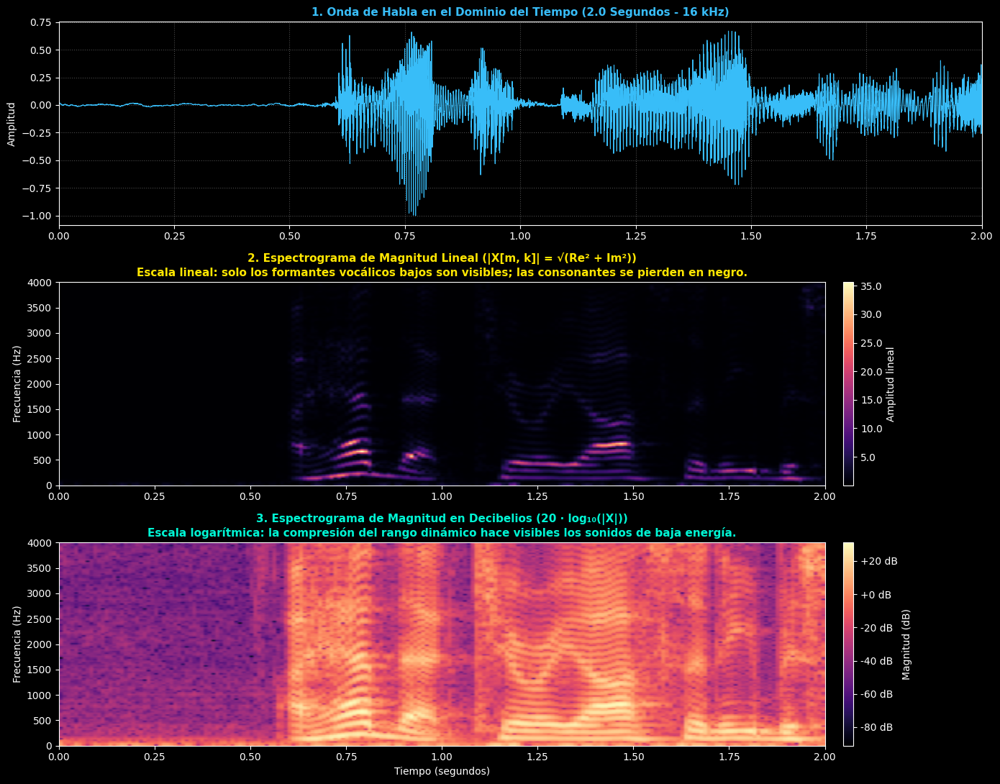
Si tomamos la salida matemática directa de la FFT en magnitud lineal, pareciera que el locutor casi no habló y que el audio está vacío. Las vocales graves tienen tanta amplitud que empujan a todas las consonantes y sonidos agudos al fondo negro.
Al aplicar la función logarítmica en el panel 3 (), no agregamos información nueva: simplemente comprimimos la escala.
Los sonidos débiles se hacen visibles y los picos fuertes dejan de saturar.
Gracias a esta compresión en decibelios, los modelos de Deep Learning pueden 'ver' la estructura completa de los formantes para clasificar cada palabra
14.4.4. Espectrograma de Potencia
Consiste en elevar la magnitud al cuadrado (o, computacionalmente, omitir la raíz cuadrada):
Se calcula el cuadrado de la magnitud de cada coeficiente complejo de la STFT, obteniendo una representación espectral de potencia.
Es la representación matemática sobre la cual se aplican los bancos de filtros triangulares Mel en sistemas como Whisper, Conformer o Kaldi antes de cualquier otra reducción.
14.4.4.1. Implementación con PyTorch
Celda 1: Instalación, Librerías y Configuración del Dispositivo
Código Python · celda 148
# ==============================================================================# CELDA 1: Configuración del Entorno, Importaciones y Dispositivo# ==============================================================================fromtypingimportTupleimportmatplotlib.pyplotaspltimporttorchimporttorchaudioimporttorchaudio.functionalasFimporttorchaudio.transformsasTfromtorchaudio.utilsimport_download_asset# Configuración de reproducibilidad y aceleradortorch.manual_seed(42)device=torch.device("cuda"iftorch.cuda.is_available()else"cpu")print(f"PyTorch versión : {torch.__version__}")print(f"TorchAudio : {torchaudio.__version__}")print(f"Dispositivo : {device}")ifdevice.type=="cuda":print(f"GPU Activa : {torch.cuda.get_device_name(0)}")
PyTorch versión : 2.11.0+cpu
TorchAudio : 2.11.0+cpu
Dispositivo : cpu
Celda 2: Carga y Preparación del Audio Real de Voz
Código Python · celda 150
# ==============================================================================# CELDA 2: Ingesta de Audio Real (VOiCES Dataset, 16 kHz)# ==============================================================================defload_sample_speech(duration_sec:float=2.0,target_sr:int=16000)->Tuple[torch.Tensor,int]:r"""Descarga una locución real, la convierte a mono, remuestrea a la frecuencia objetivo y recorta una duración exacta de audio normalizado. Parámetros: ----------- duration_sec : float, opcional Duración en segundos del fragmento a extraer. Por defecto 2.0. target_sr : int, opcional Frecuencia de muestreo estándar en Hz. Por defecto 16000. Retorna: -------- Tuple[torch.Tensor, int] - waveform : Tensor 1D con las muestras temporales normalizadas [-1.0, 1.0]. - target_sr : Tasa de muestreo final en Hz. """asset_path=_download_asset("tutorial-assets/Lab41-SRI-VOiCES-src-sp0307-ch127535-sg0042.wav")waveform,sr=torchaudio.load(asset_path)# Reducción a monoifwaveform.shape[0]>1:waveform=waveform[0:1,:]# Remuestreo si la señal difiere de target_srifsr!=target_sr:waveform=F.resample(waveform,orig_freq=sr,new_freq=target_sr)sr=target_srmax_samples=int(duration_sec*sr)waveform_cut=waveform[0,:max_samples].contiguous()# Normalización al rango [-1.0, 1.0]peak=torch.max(torch.abs(waveform_cut))ifpeak>0:waveform_cut=waveform_cut/peakreturnwaveform_cut,sr# Carga de 2 segundos de hablaDURATION=2.0SAMPLE_RATE=16000speech_audio,sr=load_sample_speech(duration_sec=DURATION,target_sr=SAMPLE_RATE)speech_audio=speech_audio.to(device)print(f"Muestras temporales cargadas : {speech_audio.shape[0]:,} muestras")print(f"Frecuencia de muestreo : {sr} Hz")
Celda 3: Cálculo del Espectrograma de Magnitud y Escala dB
Código Python · celda 152
# ==============================================================================# CELDA 3: Cómputo del Espectrograma de Potencia (power=2.0) y Escala dB# ==============================================================================defcompute_power_spectrogram(waveform:torch.Tensor,sample_rate:int=16000,win_ms:float=25.0,hop_ms:float=10.0,n_fft:int=512,)->Tuple[torch.Tensor,torch.Tensor,torch.Tensor]:r"""Calcula el espectrograma de potencia P[m, k] aplicando la STFT con ventana de Hamming y power=2.0. Fórmula evaluada: ----------------- P[m, k] = |X[m, k]|^2 = Re(X[m, k])^2 + Im(X[m, k])^2 Parámetros: ----------- waveform : torch.Tensor Vector 1D de muestras temporales de audio. sample_rate : int, opcional Tasa de muestreo en Hz. Por defecto 16000. win_ms : float, opcional Duración de la ventana en milisegundos. Por defecto 25.0 ms. hop_ms : float, opcional Avance entre ventanas sucesivas en milisegundos. Por defecto 10.0 ms. n_fft : int, opcional Tamaño de bloque para la FFT. Por defecto 512. Retorna: -------- Tuple[torch.Tensor, torch.Tensor, torch.Tensor] - power_spec : Matriz 2D de potencia lineal (freq_bins, num_frames). - time_axis : Vector temporal en segundos para el eje X. - freq_axis : Vector frecuencial en Hertz para el eje Y. Lanza: ------ ValueError Si el tensor de entrada no es unidimensional (waveform.ndim != 1). """ifwaveform.ndim!=1:raiseValueError(f"Se esperaba un tensor 1D. Dimensiones recibidas: {waveform.shape}")win_length=int((win_ms/1000.0)*sample_rate)# 400 muestras a 16 kHzhop_length=int((hop_ms/1000.0)*sample_rate)# 160 muestras a 16 kHz# power=2.0 omite la raíz cuadrada y calcula directamente la densidad de energía |X|^2spec_transform=T.Spectrogram(n_fft=n_fft,win_length=win_length,hop_length=hop_length,window_fn=torch.hamming_window,power=2.0,# Clave: Potencia cuadrática pura (|X|^2)center=True,pad_mode="reflect",).to(waveform.device)# Inferencia tensorial (requiere dimensión de batch/canal)power_spec=spec_transform(waveform.unsqueeze(0)).squeeze(0)num_bins,num_frames=power_spec.shapetime_axis=torch.arange(num_frames)*(hop_length/sample_rate)freq_axis=torch.linspace(0,sample_rate/2,num_bins)returnpower_spec,time_axis,freq_axis# 1. Potencia Lineal (|X|^2)power_spec,times,freqs=compute_power_spectrogram(speech_audio,sample_rate=sr)# 2. Conversión a decibelios para espectro de potencia (10 * log10(|X|^2))# Nota didáctica: Usamos multiplier=10.0 porque la entrada ya es una cantidad cuadrática de energía/potenciapower_spec_db=F.amplitude_to_DB(power_spec.unsqueeze(0),multiplier=10.0,amin=1e-10,db_multiplier=0.0).squeeze(0)print(f"Forma de la matriz de potencia : {tuple(power_spec.shape)} [Bins frecuencia, Marcos tiempo]")print(f"Rango en Potencia Lineal (|X|²) : Min = {power_spec.min():.6e}, Max = {power_spec.max():.4f}")print(f"Rango en Escala Log/dB (10·log) : Min = {power_spec_db.min():.2f} dB, Max = {power_spec_db.max():.2f} dB")
Forma de la matriz de potencia : (257, 201) [Bins frecuencia, Marcos tiempo]
Rango en Potencia Lineal (|X|²) : Min = 7.662002e-10, Max = 1269.4103
Rango en Escala Log/dB (10·log) : Min = -91.16 dB, Max = 31.04 dB
Por qué power=2.0 en lugar de power=1.0: En torchaudio.transforms.Spectrogram, el parámetro poweres el exponente aplicado a la magnitud de la STFT (): power=1.0 produce una representación de magnitud y power=2.0 una de potencia:
donde y son las partes real e imaginaria del coeficiente .
Por tanto, power=2.0 equivale a trabajar con la magnitud al cuadrado de los coeficientes de la STFT, es decir, con un espectrograma de potencia.
Criterio de elección:power y multiplier deben elegirse en pareja: power=2.0 con multiplier=10.0, o power=1.0 con multiplier=20.0. Ambas combinaciones dan los mismos dB; usamos potencia por ser la convención habitual en torchaudio (Spectrogram y MelSpectrogram la traen por defecto).
Por qué multiplier=10.0 y no 20.0:
Para magnitud / amplitud lineal (): .
Para potencia (): .
Ambas rutas conducen al mismo valor final en decibelios, pero como power_spec ya incorpora el exponente cuadrático (), el factor 2 del exponente ya está dentro del espectrograma y multiplier=10.0 es suficiente. Usar 20.0 sobre un espectrograma de potencia contaría el cuadrado dos veces y devolvería , es decir, el doble de dB.
amin=1e-10 en potencia: el piso es dB respecto a referencia uno. Coincide con el piso de magnitud . Es un límite numérico; no garantiza conservar toda información útil de cualquier grabación.
Referencia de los dB:db_multiplier=0.0 usa referencia espectral uno. Potencias mayores que uno producen dB positivos. La normalización de las muestras temporales no normaliza automáticamente la STFT; para hablar de dBFS o de presión sonora hace falta definir la calibración correspondiente.
Celda 4: Visualización Comparativa (Onda, Magnitud Lineal y Escala dB)
Código Python · celda 157
# ==============================================================================# CELDA 4: Renderizado de la Onda y Contraste Potencia Lineal vs Decibelios# ==============================================================================defplot_power_analysis(waveform:torch.Tensor,p_linear:torch.Tensor,p_db:torch.Tensor,times:torch.Tensor,freqs:torch.Tensor,sr:int=16000,max_freq_hz:float=4000.0,)->None:r"""Genera un panel gráfico multi-vista comparando la señal temporal, el espectrograma de potencia lineal (|X|^2) y su compresión en decibelios (10*log10(|X|^2)). Parámetros: ----------- waveform : torch.Tensor Vector 1D de audio en el tiempo. p_linear : torch.Tensor Matriz 2D de potencia lineal pura (|X|^2). p_db : torch.Tensor Matriz 2D en escala logarítmica de decibelios. times : torch.Tensor Marcas temporales en segundos. freqs : torch.Tensor Contenedores de frecuencia en Hertz. sr : int, opcional Frecuencia de muestreo. Por defecto 16000. max_freq_hz : float, opcional Límite superior del eje de frecuencias a mostrar. Por defecto 4000 Hz. """plt.style.use("dark_background")fig,axes=plt.subplots(3,1,figsize=(14,11),sharex=False)# 1. Onda temporalt_wave=torch.linspace(0,len(waveform)/sr,len(waveform)).cpu().numpy()axes[0].plot(t_wave,waveform.cpu().numpy(),color="#38BDF8",linewidth=0.8)axes[0].set_title("1. Onda de Habla en el Dominio del Tiempo (2.0 Segundos - 16 kHz)",fontsize=11,fontweight="bold",color="#38BDF8",)axes[0].set_ylabel("Amplitud",fontsize=10)axes[0].set_xlim([0,times[-1].item()])axes[0].grid(True,linestyle=":",alpha=0.3)# 2. Espectrograma de potencia lineal (|X|^2)im1=axes[1].imshow(p_linear.cpu().numpy(),origin="lower",aspect="auto",cmap="magma",extent=[times[0].item(),times[-1].item(),freqs[0].item(),freqs[-1].item(),],)axes[1].set_title("2. Espectrograma de Potencia Lineal (P[m, k] = |X[m, k]|² = Re² + Im²)\n""Nota: Al elevar al cuadrado, la disparidad energética se dispara; los formantes débiles colapsan a negro.",fontsize=11,fontweight="bold",color="#FF0055",)axes[1].set_ylabel("Frecuencia (Hz)",fontsize=10)axes[1].set_ylim([0,max_freq_hz])fig.colorbar(im1,ax=axes[1],format="%.2e",pad=0.02,label="Densidad de energía (|X|²)")# 3. Espectrograma de potencia en decibelios (10 * log10(|X|^2))im2=axes[2].imshow(p_db.cpu().numpy(),origin="lower",aspect="auto",cmap="magma",extent=[times[0].item(),times[-1].item(),freqs[0].item(),freqs[-1].item(),],)axes[2].set_title("3. Espectrograma de Potencia en Decibelios (10 · log₁₀(|X|²))\n""Nota: La escala logarítmica ecualiza el rango dinámico y revela toda la estructura fonética de los formantes.",fontsize=11,fontweight="bold",color="#00F5D4",)axes[2].set_xlabel("Tiempo (segundos)",fontsize=10)axes[2].set_ylabel("Frecuencia (Hz)",fontsize=10)axes[2].set_ylim([0,max_freq_hz])fig.colorbar(im2,ax=axes[2],format="%+2.0f dB",pad=0.02,label="Potencia (dB)")plt.tight_layout()plt.show()plot_power_analysis(speech_audio,power_spec,power_spec_db,times,freqs,sr=sr)
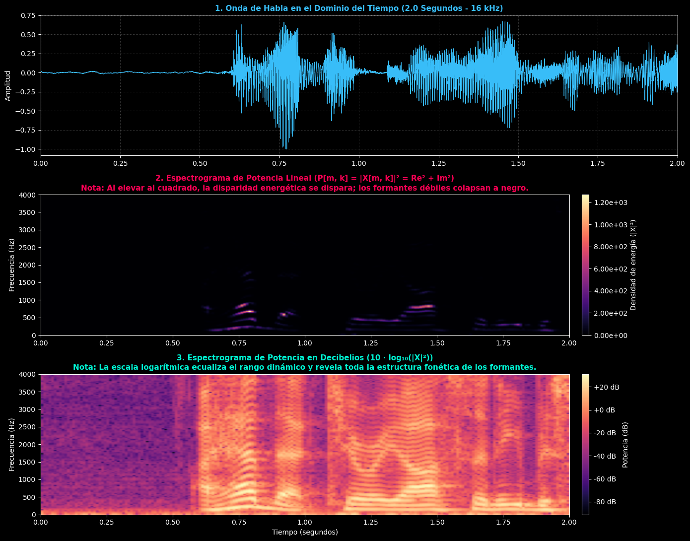
Si la magnitud lineal ya se veía oscura, la potencia lineal la oscurece aún más: los componentes débiles quedan prácticamente invisibles.
Al elevar al cuadrado (), la razón entre una vocal fuerte y una consonante también se eleva al cuadrado: una relación de en magnitud pasa a ser de en potencia.
El pico de la vocal fija el tope de la escala de color (), y los componentes débiles, con valores de pocas unidades o menos, se ven casi negros. No desaparecen de los datos: es la escala lineal de visualización la que los oculta.
En el panel inferior aplicamos . El logaritmo no añade información: es una transformación monótona que comprime el rango dinámico, de modo que los picos dejan de dominar la escala y los sonidos suaves se hacen visibles. Aquí el rango va de a (el pico de equivale a ). Por esta razón, modelos como Whisper o los Conformer para ASR usan como entrada un espectrograma log-Mel (escala logarítmica aplicada a bandas Mel) en lugar de la potencia lineal.
Celda 5: Espectrograma de Magnitud vs. de Potencia
Código Python · celda 160
# ==============================================================================# CELDA COMPARATIVA: ESPECTROGRAMA DE MAGNITUD VS POTENCIA (LINEAL Y DECIBELIOS)# ==============================================================================fromtypingimportTupleimportmatplotlib.pyplotaspltimportnumpyasnpimporttorchimporttorchaudioimporttorchaudio.functionalasFimporttorchaudio.transformsasTfromtorchaudio.utilsimport_download_assetdevice=torch.device("cuda"iftorch.cuda.is_available()else"cpu")defcompare_magnitude_and_power_spectrograms(duration_sec:float=2.0,target_sr:int=16000,win_ms:float=25.0,hop_ms:float=10.0,n_fft:int=512,max_freq_hz:float=4000.0,)->Tuple[torch.Tensor,torch.Tensor,torch.Tensor,torch.Tensor]:r"""Calcula y compara en paralelo los espectrogramas de magnitud (|X|) y potencia (|X|^2), tanto en escala lineal como en compresión logarítmica de decibelios (dB). Fundamentos Matemáticos: ------------------------- 1. Magnitud lineal : |X[m, k]| = \sqrt{Re^2 + Im^2} 2. Potencia lineal : P[m, k] = |X[m, k]|^2 = Re^2 + Im^2 3. Magnitud en dB : 20 \log_{10}(\max(|X|, 10^{-5})) 4. Potencia en dB : 10 \log_{10}(\max(|X|^2, 10^{-10})) Identidad logarítmica demostrada: --------------------------------- 10 \log_{10}(|X|^2) = 10 \cdot 2 \log_{10}(|X|) = 20 \log_{10}(|X|) Parámetros: ----------- duration_sec : float, opcional Duración temporal a recortar del audio en segundos. Por defecto 2.0 s. target_sr : int, opcional Tasa de muestreo objetivo en Hz. Por defecto 16000 Hz. win_ms : float, opcional Longitud de la ventana en milisegundos. Por defecto 25.0 ms. hop_ms : float, opcional Paso de avance entre marcos en milisegundos. Por defecto 10.0 ms. n_fft : int, opcional Número de puntos de la FFT. Por defecto 512. max_freq_hz : float, opcional Límite superior en Hz a graficar. Por defecto 4000.0 Hz. Retorna: -------- Tuple[torch.Tensor, torch.Tensor, torch.Tensor, torch.Tensor] - mag_linear : Matriz 2D de magnitud lineal. - power_linear : Matriz 2D de potencia lineal cuadrática. - mag_db : Matriz 2D de magnitud en escala dB (multiplier=20). - power_db : Matriz 2D de potencia en escala dB (multiplier=10). """# 1. Carga y acondicionamiento del audio realasset_path=_download_asset("tutorial-assets/Lab41-SRI-VOiCES-src-sp0307-ch127535-sg0042.wav")waveform,sr=torchaudio.load(asset_path)ifwaveform.shape[0]>1:waveform=waveform[0:1,:]ifsr!=target_sr:waveform=F.resample(waveform,orig_freq=sr,new_freq=target_sr)sr=target_srmax_samples=int(duration_sec*sr)waveform=waveform[0,:max_samples].contiguous().to(device)peak=torch.max(torch.abs(waveform))ifpeak>0:waveform=waveform/peakwin_length=int((win_ms/1000.0)*sr)# 400 muestrashop_length=int((hop_ms/1000.0)*sr)# 160 muestras# 2. Espectrograma de Magnitud Lineal (power = 1.0)transform_mag=T.Spectrogram(n_fft=n_fft,win_length=win_length,hop_length=hop_length,window_fn=torch.hamming_window,power=1.0,center=True,pad_mode="reflect",).to(device)# 3. Espectrograma de Potencia Lineal (power = 2.0)transform_power=T.Spectrogram(n_fft=n_fft,win_length=win_length,hop_length=hop_length,window_fn=torch.hamming_window,power=2.0,center=True,pad_mode="reflect",).to(device)audio_batch=waveform.unsqueeze(0)mag_linear=transform_mag(audio_batch).squeeze(0)power_linear=transform_power(audio_batch).squeeze(0)# 4. Compresión en Decibelios (Equivalencia con multiplier=20 vs multiplier=10)# Suelo equivalente: (1e-5)^2 = 1e-10 -> -100 dB en ambos casosmag_db=F.amplitude_to_DB(mag_linear.unsqueeze(0),multiplier=20.0,amin=1e-5,db_multiplier=0.0).squeeze(0)power_db=F.amplitude_to_DB(power_linear.unsqueeze(0),multiplier=10.0,amin=1e-10,db_multiplier=0.0,).squeeze(0)# 5. Ejes coordenadosnum_bins,num_frames=mag_linear.shapetimes=(torch.arange(num_frames)*(hop_length/sr)).cpu().numpy()freqs=torch.linspace(0,sr/2,num_bins).cpu().numpy()# 6. Renderizado en cuadrícula 2x2plt.style.use("dark_background")fig,axes=plt.subplots(2,2,figsize=(18,10),sharex=True,sharey=True)extent_coords=[times[0],times[-1],freqs[0],freqs[-1]]# Fila 1 - Izquierda: Magnitud Linealim00=axes[0,0].imshow(mag_linear.cpu().numpy(),origin="lower",aspect="auto",cmap="magma",extent=extent_coords,)axes[0,0].set_title("A. Magnitud Lineal (|X| = √(Re² + Im²))\n"f"Rango: [{mag_linear.min():.2f}, {mag_linear.max():.2f}] | Solo formantes bajos visibles",fontsize=11,fontweight="bold",color="#FFE600",)axes[0,0].set_ylabel("Frecuencia (Hz)",fontsize=10)fig.colorbar(im00,ax=axes[0,0],format="%.1f",pad=0.02,label="Amplitud lineal (|X|)",)# Fila 1 - Derecha: Potencia Linealim01=axes[0,1].imshow(power_linear.cpu().numpy(),origin="lower",aspect="auto",cmap="magma",extent=extent_coords,)axes[0,1].set_title("B. Potencia Lineal (|X|² = Re² + Im²)\n"f"Rango: [{power_linear.min():.2e}, {power_linear.max():.2f}] | Colapso cuadrático a negro",fontsize=11,fontweight="bold",color="#FF0055",)fig.colorbar(im01,ax=axes[0,1],format="%.1e",pad=0.02,label="Energía cuadrática (|X|²)",)# Fila 2 - Izquierda: Magnitud en dBim10=axes[1,0].imshow(mag_db.cpu().numpy(),origin="lower",aspect="auto",cmap="magma",extent=extent_coords,)axes[1,0].set_title("C. Magnitud en Decibelios (20 · log₁₀(|X|))\n"f"Rango: [{mag_db.min():.1f}, {mag_db.max():.1f}] dB | Rescate del rango dinámico",fontsize=11,fontweight="bold",color="#00F5D4",)axes[1,0].set_xlabel("Tiempo (segundos)",fontsize=10)axes[1,0].set_ylabel("Frecuencia (Hz)",fontsize=10)fig.colorbar(im10,ax=axes[1,0],format="%+2.0f dB",pad=0.02,label="Potencia (dB)")# Fila 2 - Derecha: Potencia en dBim11=axes[1,1].imshow(power_db.cpu().numpy(),origin="lower",aspect="auto",cmap="magma",extent=extent_coords,)axes[1,1].set_title("D. Potencia en Decibelios (10 · log₁₀(|X|²))\n"f"Rango: [{power_db.min():.1f}, {power_db.max():.1f}] dB | Idéntico a panel C",fontsize=11,fontweight="bold",color="#00F5D4",)axes[1,1].set_xlabel("Tiempo (segundos)",fontsize=10)fig.colorbar(im11,ax=axes[1,1],format="%+2.0f dB",pad=0.02,label="Potencia (dB)")axes[0,0].set_ylim([0,max_freq_hz])plt.tight_layout()plt.show()# 7. Diagnóstico numérico de equivalenciaerror_maximo=torch.max(torch.abs(mag_db-power_db)).item()son_identicos=torch.allclose(mag_db,power_db,atol=1e-4)print("="*85)print("VERIFICACIÓN CUANTITATIVA DE EQUIVALENCIA (MAGNITUD dB vs POTENCIA dB)")print("="*85)print(f" • Diferencia absoluta máxima en dB : {error_maximo:.6e} dB")print(f" • ¿Son numéricamente idénticos? : {'SÍ (Tolerancia < 1e-4 dB)'ifson_identicoselse'NO'}")print(f" • Explicación matemática : 10 * log10(|X|²) == 20 * log10(|X|)")print("="*85)returnmag_linear,power_linear,mag_db,power_db# Ejecutar la celda comparativamag_lin,pow_lin,mag_db,pow_db=compare_magnitude_and_power_spectrograms()
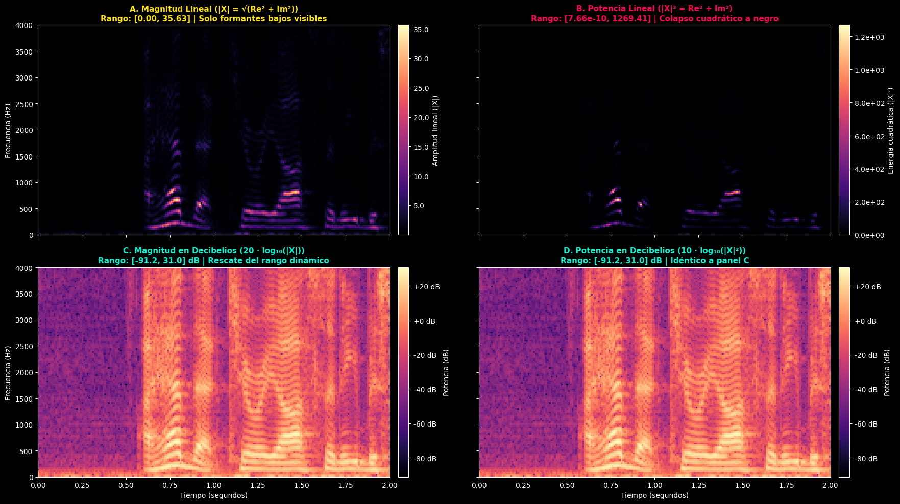
=====================================================================================
VERIFICACIÓN CUANTITATIVA DE EQUIVALENCIA (MAGNITUD dB vs POTENCIA dB)
=====================================================================================
• Diferencia absoluta máxima en dB : 1.525879e-05 dB
• ¿Son numéricamente idénticos? : SÍ (Tolerancia < 1e-4 dB)
• Explicación matemática : 10 * log10(|X|²) == 20 * log10(|X|)
=====================================================================================
El logaritmo comprime la escala de magnitud o potencia. Sin pisos, para y :
Con pisos, la equivalencia exacta requiere . Sumar el mismo a y a no conserva la igualdad.
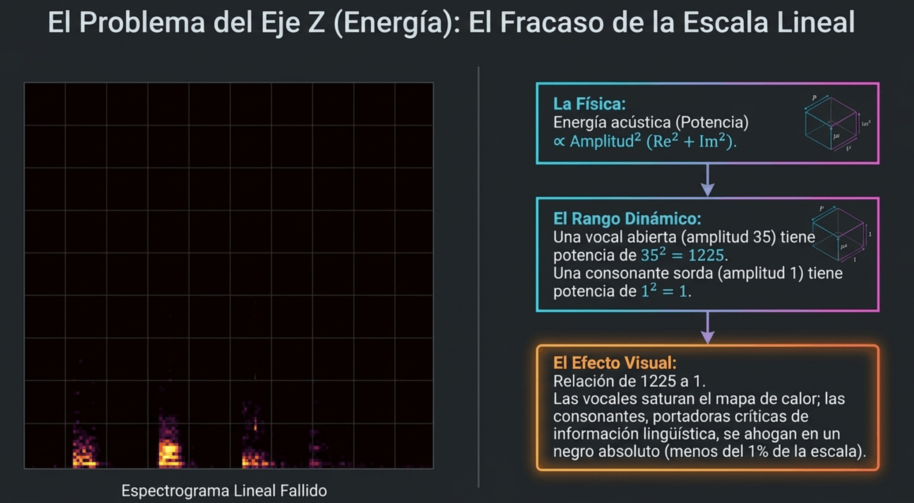
Ilustrativo. Amplitudes 35 y 1 dan una razón de potencias (); en señales reales depende del fonema, el hablante y la normalización de la STFT. En escala lineal el máximo fija el tope de color y los valores débiles se ven casi negros, aunque siguen en los datos.
Con clamping (como en AmplitudeToDB de TorchAudio o power_to_db de Librosa), la equivalencia entre potencia y magnitud es exacta si el piso en magnitud es :
Algunos pipelines de aprendizaje profundo (por ejemplo, el estilo Kaldi, torchaudio.compliance.kaldi.fbank) usan el logaritmo natural de la energía (Log-Power):
Ambas escalas difieren solo por una constante: .
El término (por ejemplo, en potencia, equivalente a en magnitud) es un pequeño suelo de estabilidad numérica para evitar evaluar en tramos de silencio digital. Puede aplicarse sumándolo (como arriba) o recortando con ; son variantes distintas.
14.4.5.1. Percepción Psicoacústica Humana (Ley de Weber-Fechner)
El oído humano percibe la intensidad de forma aproximadamente logarítmica, no lineal. Como regla práctica, un aumento de (diez veces más potencia) se percibe como un volumen subjetivo (loudness) cercano al doble para un tono de ~ a nivel moderado. El espectrograma logarítmico acerca la escala matemática a esa percepción, aunque no es un modelo de loudness (no incluye ponderación por frecuencia, como la curva A).
14.4.5.2. Compresión del Rango Dinámico
La voz humana tiene una disparidad energética muy grande:
Una vocal abierta (/a/) puede tener entre y más que los fonemas más débiles (como /f/ o /θ/), es decir, de a veces más potencia, según el hablante y el contexto.
En un espectrograma lineal o de potencia, si ajustamos la escala de colores para ver la /a/, las consonantes y los formantes superiores quedan casi negros (prácticamente invisibles).
Si subimos el brillo para ver las consonantes, la vocal satura la escala y se ve como una mancha casi blanca.
El logaritmo comprime el rango dinámico: reduce el peso de las amplitudes gigantes y acerca las magnitudes de los sonidos débiles, de modo que todos los fonemas son visibles en una misma imagen y la red recibe una entrada con una escala más estable.
El rango de los dB depende de la referencia y de la normalización espectral. Con piso de potencia y referencia uno, el mínimo es dB; el máximo puede superar 0 dB. El logaritmo transforma un producto fuente–filtro en suma; su separación requiere supuestos y procesamiento adicional, por ejemplo cepstral.
Espectrograma en dB con frecuencia lineal (0-8 kHz para ). Asigna la misma densidad de bins por Hz a todo el rango, aunque la resolución auditiva no es uniforme. La banda 4-8 kHz sí aporta información (p. ej., /s/ vs /f/).
14.4.6. La Escala Perceptual de Mel
El oído humano tampoco percibe las frecuencias de forma lineal. La membrana basilar de la cóclea distingue mejor los tonos bajos (por debajo de ~, donde la resolución es aproximadamente lineal) y, por encima, su resolución en frecuencia se vuelve aproximadamente logarítmica: se necesitan diferencias cada vez mayores en Hz para notar un cambio de tono.
Nota. El ancho de banda crítico es ~100 Hz por debajo de 500 Hz y crece de forma proporcional a la frecuencia por encima. Una rejilla lineal sobremuestrea las altas frecuencias respecto a la percepción, pero estas no carecen de información.
La escala de Mel (propuesta por Stevens, Volkmann y Newman en 1937) es una escala perceptual de tonos en la que distancias iguales en Mels corresponden, de forma aproximada, a diferencias de tono iguales para el oído humano. Una aproximación analítica habitual (variante HTK, de O'Shaughnessy) es:
Su función inversa para convertir de Mels a Hertz es:
Existen otras variantes (como Slaney, que es la predeterminada en Librosa), por lo que conviene fijar mel_scale al reproducir resultados entre librerías.
Escala Mel (variante HTK): ; aproximadamente lineal bajo ~1 kHz y logarítmica por encima, con transición gradual. mel y mel. Modelo empírico; existen otras variantes (Slaney).
Esquema. Cada filtro triangular suma la potencia de los bins STFT de una banda, con espaciado uniforme en Mel (cada vez más ancho en Hz). Aproxima las bandas críticas. Se aplica sobre la potencia lineal y el log va después (p. ej., 201 bins → 80 bandas).
Para mapear el espectro lineal obtenido de la FFT a la escala perceptual, se aplica un conjunto de filtros triangulares de Mel (típicamente bancos de filtros).
Cada filtro se define en el dominio espectral como una ventana triangular centrada en la frecuencia :
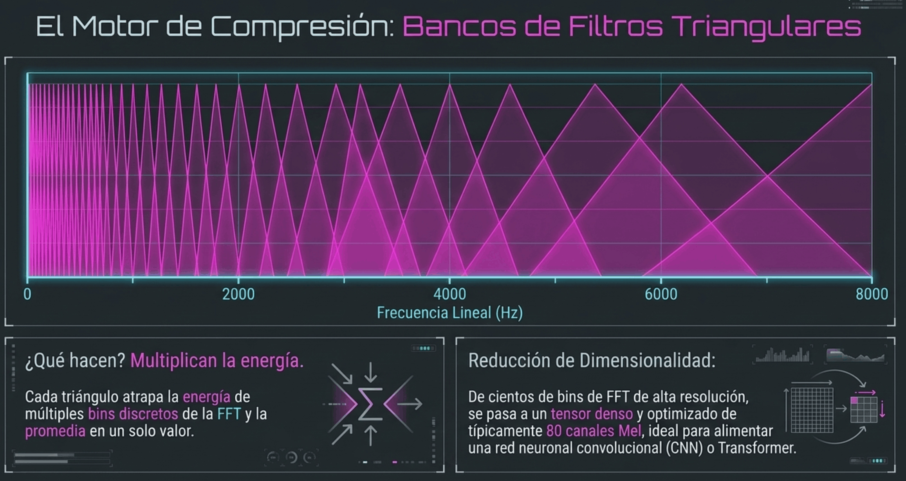
Al multiplicar el espectro de potencia por el banco de filtros y sumar la energía contenida en cada triángulo, se obtiene el Espectrograma de Mel (Mel-Spectrogram):
# ==============================================================================# CELDA: COMPARATIVA TRIPLE: MAGNITUD VS POTENCIA VS LOGARÍTMICO (+ LOG-MEL)# ==============================================================================fromtypingimportTupleimportmatplotlib.pyplotaspltimporttorchimporttorchaudioimporttorchaudio.functionalasFimporttorchaudio.transformsasTfromtorchaudio.utilsimport_download_assetdevice=torch.device("cuda"iftorch.cuda.is_available()else"cpu")defload_audio_segment(duration_sec:float=2.0,target_sr:int=16000)->Tuple[torch.Tensor,int]:r"""Descarga una locución de voz real del dataset público VOiCES, la estandariza a mono canal, remuestrea a 16 kHz y recorta el segmento temporal exacto. Parámetros: ----------- duration_sec : float, opcional Duración temporal en segundos del audio a extraer. Por defecto 2.0 s. target_sr : int, opcional Tasa de muestreo objetivo en Hz. Por defecto 16000 Hz. Retorna: -------- Tuple[torch.Tensor, int] - waveform : Tensor 1D con las muestras normalizadas en el intervalo [-1.0, 1.0]. - target_sr : Frecuencia de muestreo final en Hz. """asset_path=_download_asset("tutorial-assets/Lab41-SRI-VOiCES-src-sp0307-ch127535-sg0042.wav")waveform,sr=torchaudio.load(asset_path)ifwaveform.shape[0]>1:waveform=waveform[0:1,:]ifsr!=target_sr:waveform=F.resample(waveform,orig_freq=sr,new_freq=target_sr)sr=target_srmax_samples=int(duration_sec*sr)waveform=waveform[0,:max_samples].contiguous()peak=torch.max(torch.abs(waveform))ifpeak>0:waveform=waveform/peakreturnwaveform,srdefcompute_spectral_family(waveform:torch.Tensor,sr:int=16000,win_ms:float=25.0,hop_ms:float=10.0,n_fft:int=512,n_mels:int=80,)->Tuple[torch.Tensor,torch.Tensor,torch.Tensor,torch.Tensor,torch.Tensor,torch.Tensor]:r"""Calcula de forma sincronizada los cuatro tipos de espectrogramas derivados de la STFT: 1. Magnitud Lineal (|X|) 2. Potencia Lineal (|X|^2) 3. Espectrograma Logarítmico en Decibelios (10 * log10(|X|^2) = 20 * log10(|X|)) 4. Log-Mel Spectrogram (Frecuencia en Escala Mel + Decibelios) Parámetros: ----------- waveform : torch.Tensor Vector 1D de muestras de audio temporal. sr : int, opcional Frecuencia de muestreo en Hz. Por defecto 16000. win_ms : float, opcional Duración de la ventana en milisegundos. Por defecto 25.0 ms. hop_ms : float, opcional Desplazamiento entre ventanas en milisegundos. Por defecto 10.0 ms. n_fft : int, opcional Puntos de la FFT. Por defecto 512. n_mels : int, opcional Número de canales para el banco de filtros Mel. Por defecto 80. Retorna: -------- Tuple con (mag_linear, power_linear, log_db, log_mel_db, time_axis, freq_axis). """win_length=int((win_ms/1000.0)*sr)# 400 muestrashop_length=int((hop_ms/1000.0)*sr)# 160 muestras# 1. Transformada de Magnitud Lineal (power = 1.0 -> |X|)transform_mag=T.Spectrogram(n_fft=n_fft,win_length=win_length,hop_length=hop_length,window_fn=torch.hamming_window,power=1.0,center=True,pad_mode="reflect",).to(waveform.device)# 2. Transformada de Potencia Lineal (power = 2.0 -> |X|^2)transform_power=T.Spectrogram(n_fft=n_fft,win_length=win_length,hop_length=hop_length,window_fn=torch.hamming_window,power=2.0,center=True,pad_mode="reflect",).to(waveform.device)# 3. Transformada de Banco de Filtros Mel (Escala bioacústica en frecuencia)transform_mel=T.MelSpectrogram(sample_rate=sr,n_fft=n_fft,win_length=win_length,hop_length=hop_length,n_mels=n_mels,window_fn=torch.hamming_window,power=2.0,center=True,pad_mode="reflect",).to(waveform.device)audio_batch=waveform.unsqueeze(0)# Cómputo de matrices basemag_linear=transform_mag(audio_batch).squeeze(0)power_linear=transform_power(audio_batch).squeeze(0)mel_power=transform_mel(audio_batch).squeeze(0)# 4. Compresión Logarítmica (Decibelios en amplitud y decibelios en Mel)log_db=F.amplitude_to_DB(power_linear.unsqueeze(0),multiplier=10.0,amin=1e-10,db_multiplier=0.0).squeeze(0)log_mel_db=F.amplitude_to_DB(mel_power.unsqueeze(0),multiplier=10.0,amin=1e-10,db_multiplier=0.0).squeeze(0)# Ejes coordenadosnum_bins,num_frames=mag_linear.shapetime_axis=(torch.arange(num_frames)*(hop_length/sr)).cpu().numpy()freq_axis=torch.linspace(0,sr/2,num_bins).cpu().numpy()returnmag_linear,power_linear,log_db,log_mel_db,time_axis,freq_axisdefplot_spectrogram_comparison_quad(mag_linear:torch.Tensor,power_linear:torch.Tensor,log_db:torch.Tensor,log_mel_db:torch.Tensor,times:torch.Tensor,freqs:torch.Tensor,max_freq_hz:float=4000.0,)->None:r"""Renderiza una cuadrícula de 4 subplots de alto contraste para comparar directamente la respuesta de magnitud, potencia, compresión logarítmica y escala Mel. """plt.style.use("dark_background")fig,axes=plt.subplots(4,1,figsize=(15,15),sharex=True)extent_hz=[times[0],times[-1],freqs[0],freqs[-1]]# PANEL 1: Magnitud Linealim0=axes[0].imshow(mag_linear.cpu().numpy(),origin="lower",aspect="auto",cmap="magma",extent=extent_hz,)axes[0].set_title("1. Espectrograma de Magnitud Lineal (|X[m, k]| = √(Re² + Im²))\n""Escala física de presión: contraste lineal moderado; las consonantes agudas apenas se perciben.",fontsize=11,fontweight="bold",color="#FFE600",)axes[0].set_ylabel("Frecuencia (Hz)",fontsize=10)axes[0].set_ylim([0,max_freq_hz])fig.colorbar(im0,ax=axes[0],format="%.1f",pad=0.02,label="Amplitud (|X|)")# PANEL 2: Potencia Linealim1=axes[1].imshow(power_linear.cpu().numpy(),origin="lower",aspect="auto",cmap="magma",extent=extent_hz,)axes[1].set_title("2. Espectrograma de Potencia Lineal (P[m, k] = |X[m, k]|² = Re² + Im²)\n""Escala física de energía: la distancia cuadrática ahoga los formantes superiores en negro absoluto.",fontsize=11,fontweight="bold",color="#FF0055",)axes[1].set_ylabel("Frecuencia (Hz)",fontsize=10)axes[1].set_ylim([0,max_freq_hz])fig.colorbar(im1,ax=axes[1],format="%.1e",pad=0.02,label="Energía (|X|²)")# PANEL 3: Espectrograma Logarítmico (Decibelios en Energía)im2=axes[2].imshow(log_db.cpu().numpy(),origin="lower",aspect="auto",cmap="magma",extent=extent_hz,)axes[2].set_title("3. Espectrograma Logarítmico (10 · log₁₀(|X|²) = 20 · log₁₀(|X|) en dB)\n""Compresión logarítmica en el eje Z (Color): revela simultáneamente vocales y consonantes débiles.",fontsize=11,fontweight="bold",color="#00F5D4",)axes[2].set_ylabel("Frecuencia (Hz)",fontsize=10)axes[2].set_ylim([0,max_freq_hz])fig.colorbar(im2,ax=axes[2],format="%+2.0f dB",pad=0.02,label="Potencia (dB)")# PANEL 4: Log-Mel Spectrogram (Doble compresión: Eje Y en Mel + Eje Z en dB)extent_mel=[times[0],times[-1],0,log_mel_db.shape[0]]im3=axes[3].imshow(log_mel_db.cpu().numpy(),origin="lower",aspect="auto",cmap="magma",extent=extent_mel,)axes[3].set_title("4. Log-Mel Spectrogram (Filtros Mel en Eje Y + Compresión Logarítmica en Eje Z)\n""Entrada estándar para redes neuronales (Whisper, Conformer): 80 canales perceptuales comprimidos.",fontsize=11,fontweight="bold",color="#B5179E",)axes[3].set_xlabel("Tiempo (segundos)",fontsize=10)axes[3].set_ylabel("Canal Mel (0 a 79)",fontsize=10)fig.colorbar(im3,ax=axes[3],format="%+2.0f dB",pad=0.02,label="Log-Mel (dB)")plt.tight_layout()plt.show()# ==============================================================================# EJECUCIÓN Y VISUALIZACIÓN# ==============================================================================speech_tensor,sample_rate=load_audio_segment(duration_sec=2.0,target_sr=16000)speech_tensor=speech_tensor.to(device)mag_lin,pow_lin,log_spec_db,log_mel_spec_db,t_axis,f_axis=compute_spectral_family(speech_tensor,sr=sample_rate,n_fft=512,n_mels=80)plot_spectrogram_comparison_quad(mag_lin,pow_lin,log_spec_db,log_mel_spec_db,t_axis,f_axis,max_freq_hz=4000.0)# Resumen de rangos numéricosprint("="*80)print("RANGOS DINÁMICOS COMPARADOS (INSPECCIÓN CUANTITATIVA)")print("="*80)print(f"1. Magnitud Lineal (|X|) : [{mag_lin.min():.4f} a {mag_lin.max():.4f}] (Amplitud directa)")print(f"2. Potencia Lineal (|X|²) : [{pow_lin.min():.4e} a {pow_lin.max():.4f}] (Disparidad cuadrática extrema)")print(f"3. Espectrograma Log (dB) : [{log_spec_db.min():.2f} dB a {log_spec_db.max():.2f} dB] (Comprimido)")print(f"4. Log-Mel Spectrogram (80 ch) : [{log_mel_spec_db.min():.2f} dB a {log_mel_spec_db.max():.2f} dB] (Tensor final ASR)")print("="*80)
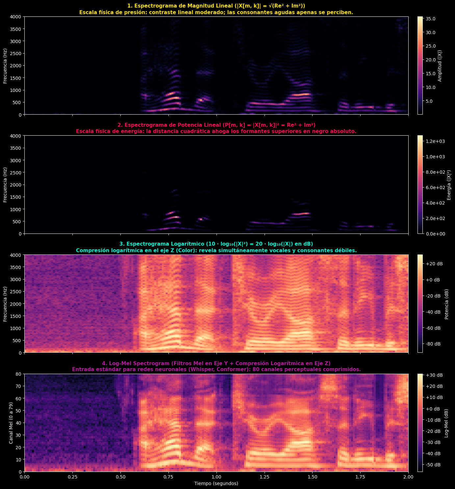
================================================================================
RANGOS DINÁMICOS COMPARADOS (INSPECCIÓN CUANTITATIVA)
================================================================================
1. Magnitud Lineal (|X|) : [0.0000 a 35.6288] (Amplitud directa)
2. Potencia Lineal (|X|²) : [7.6620e-10 a 1269.4103] (Disparidad cuadrática extrema)
3. Espectrograma Log (dB) : [-91.16 dB a 31.04 dB] (Comprimido)
4. Log-Mel Spectrogram (80 ch) : [-56.51 dB a 30.93 dB] (Tensor final ASR)
================================================================================
1. Espectrograma de Magnitud Lineal ()
La imagen está mayormente en negro. Solo se aprecian líneas horizontales tenues: son los armónicos de la voz, cuya envolvente marca los formantes graves. Las más intensas quedan por debajo de y se desvanecen hacia .
Causa técnica: La barra lateral muestra amplitudes de a (unidades arbitrarias de la STFT). Como los picos de las vocales son mucho mayores que las consonantes suaves o el ruido de fondo, casi toda la escala de color se reserva para esos picos y los sonidos débiles caen en la oscuridad.
2. Espectrograma de Potencia Lineal ()
Ocurre un colapso visual casi total: la imagen es casi toda negra y solo destacan tres núcleos brillantes, cerca de , y , con trazos muy tenues en el resto.
Causa técnica: Al elevar al cuadrado, la escala sube hasta unidades (). Una amplitud de sigue valiendo , así que la disparidad entre picos y sonidos débiles pasa de a . Sin una compresión posterior, el contraste útil se concentra en muy pocos píxeles y el resto queda casi en cero.
3. Espectrograma Logarítmico en Decibelios ()
La imagen se ilumina en tonos cálidos allí donde hay habla y revela mucha más estructura: armónicos individuales, formantes y energía de alta frecuencia (hasta ). El tramo inicial (–) sigue siendo oscuro: es el piso de ruido, ahora visible.
Causa técnica: El logaritmo comprime únicamente el valor representado en color (la "tercera dimensión"), reduciendo el rango a (referencia : por eso el pico queda en ; no son dB SPL).
Los formantes fuertes dejan de acaparar la escala y los sonidos débiles se vuelven mucho más visibles. Sin embargo, el eje vertical sigue siendo lineal en Hertz (frecuencias equiespaciadas; por ejemplo, si , dato que la imagen no muestra).
4. Log-Mel Spectrogram (Eje Y en Mel + Eje Z en dB)
Las bandas de las vocales en la zona inferior (canales Mel ) se expanden verticalmente hasta ocupar cerca de la mitad del lienzo, mientras que las frecuencias agudas se comprimen en la mitad superior.
Causa técnica: Este panel aplica una doble transformación:
Comprime la energía con decibelios (color).
Reparametriza la frecuencia: pondera y agrega los bins de la FFT con 80 filtros triangulares Mel (eje Y, canales ), cuyo ancho crece con la frecuencia.
Como la percepción de tono es más fina en graves y más gruesa en agudos, la escala Mel (una aproximación perceptual) reparte más bandas en las frecuencias graves y agrupa muchos bins en cada banda aguda. Esta matriz de es la entrada habitual de modelos como Whisper y Conformer (wav2vec 2.0, en cambio, parte de la onda cruda).